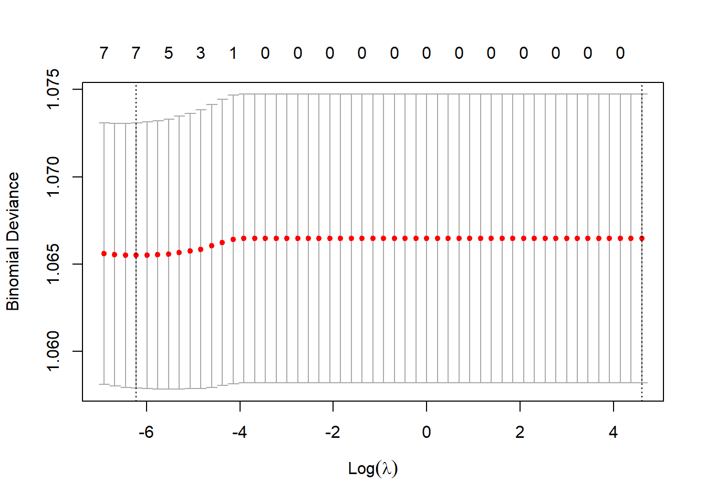
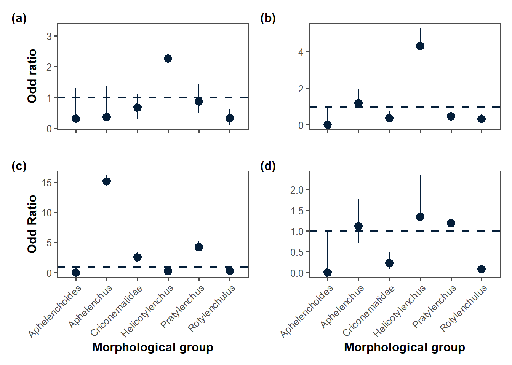
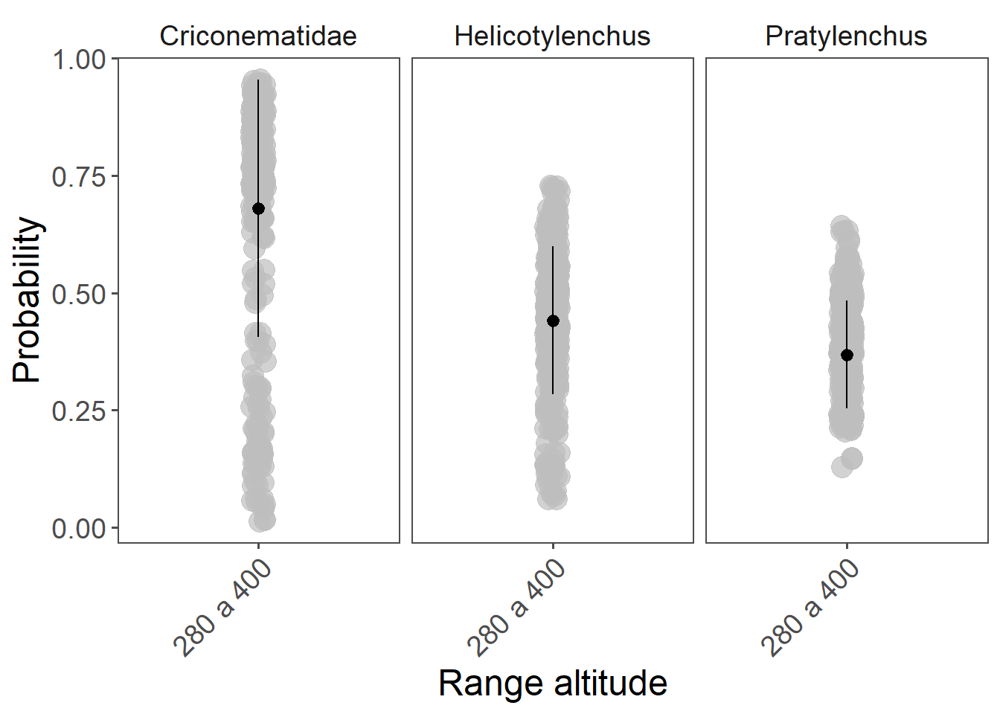
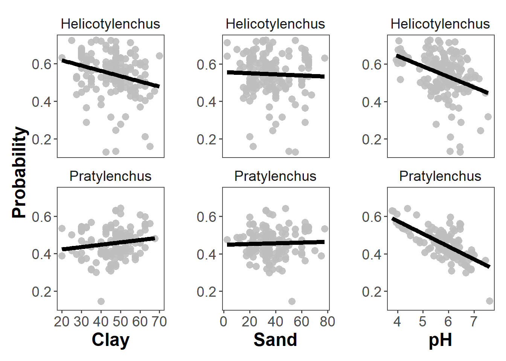
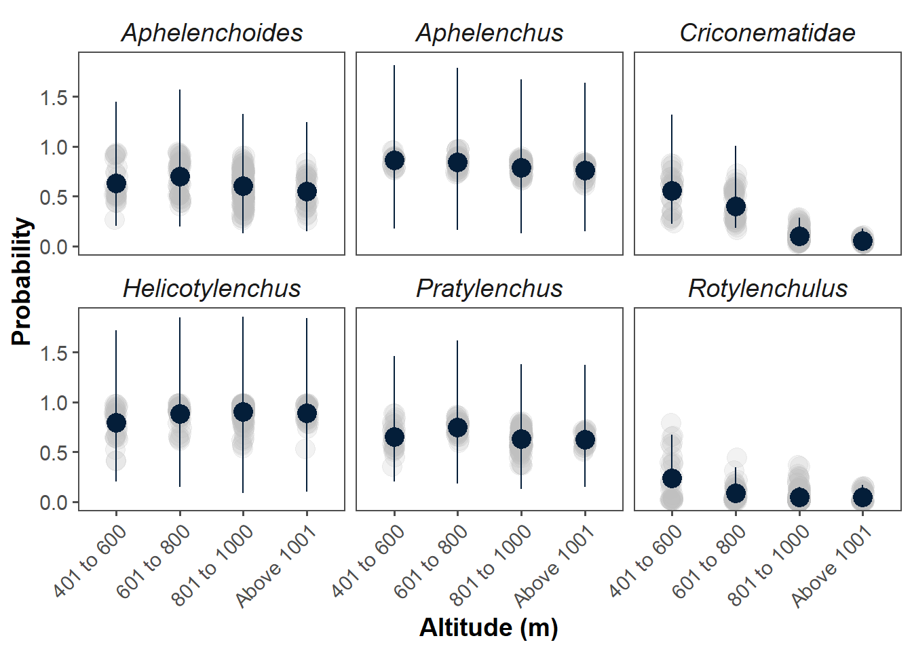
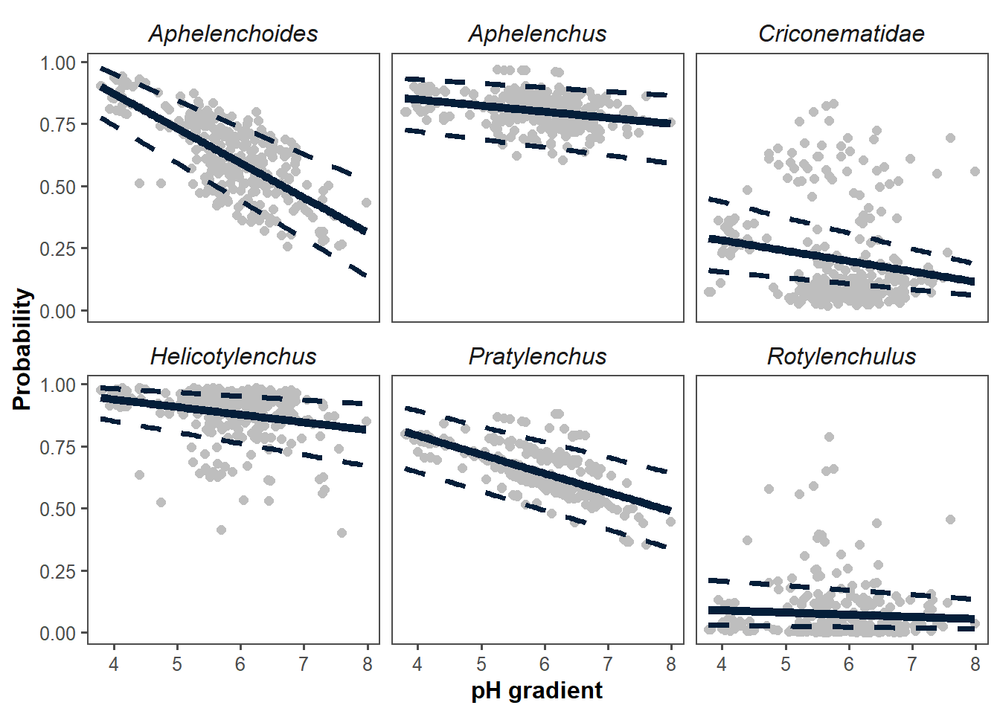
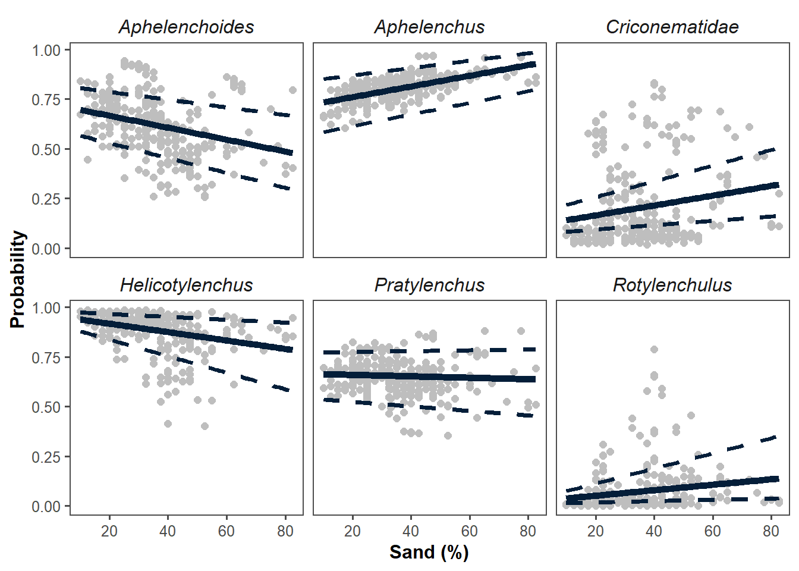
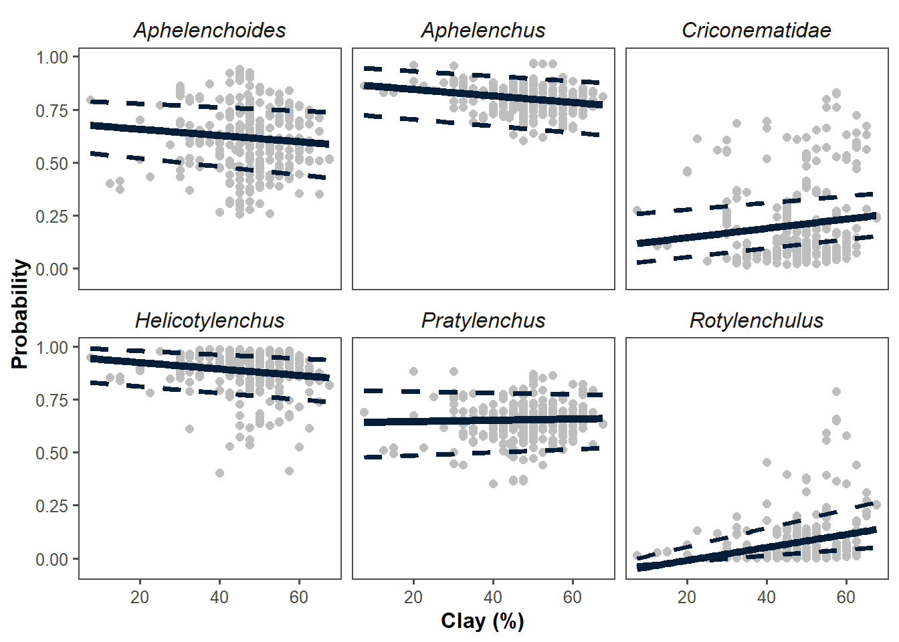
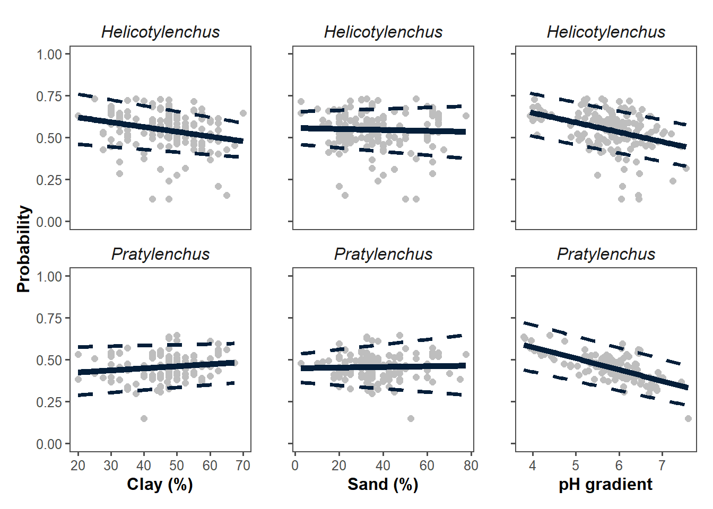

library(gsheet) # Importação dos dados na nuvem
library(dplyr) # Manipulação
library(readxl) # Improtação de dados no computador
#library(vegan) # Gráfico de HeatMap
library(ggthemes) #Tema de fundo do gráfico
library(tidyverse) # Conjunto de pacotes
library(cowplot) # theme
library(writexl) #Exportação de dados
library(ggalluvial)
library(ggplot2) # Gráficos
library(lme4) # GLM
library(glmmTMB) #GLMM
library(rnaturalearth)
library(ggplot2)
library(ggridges)
library(performance)
library(DHARMa)
library(PresenceAbsence)
library(caret)
library(lmtest)Packages
Incidence - Logistic regression
#incidence = gsheet2tbl("https://docs.google.com/spreadsheets/d/1gr-TUpB-mNAhZVOBEcmHRwE1etorOeJvlhjcu7wEpz4/edit?usp=sharing")
incidence = read.csv("data/spatial_incidence.csv")
head(incidence)incidence = incidence %>%
filter(soil %in% c("Argissolo","Cambissolo","Latossolo"))
#incidence = incidence %>%
# filter(!city %in% c("DFL","DFC"))
incidence[incidence$soil== "Argissolo",c("soil_corrigido")] <- 2
incidence[incidence$soil== "Cambissolo",c("soil_corrigido")] <- 5
incidence[incidence$soil== "Latossolo",c("soil_corrigido")] <- 6
incidence[incidence$cropping== "Corn_soybean",c("cropping_corrigido")] <- 1
incidence[incidence$cropping== "Corn_others",c("cropping_corrigido")] <- 2
incidence[incidence$tillage== "No-till",c("tillage_corrigido")] <- 1
incidence[incidence$tillage== "Minimum",c("tillage_corrigido")] <- 1
incidence[incidence$tillage== "Conventional",c("tillage_corrigido")] <- 2
incidence[incidence$region== "South",c("region_corrigido")] <- 1
incidence[incidence$region== "Southwest",c("region_corrigido")] <- 2
incidence[incidence$region== "East",c("region_corrigido")] <- 3
incidence[incidence$region== "Center",c("region_corrigido")] <- 4
incidence[incidence$region== "Northwest",c("region_corrigido")] <- 5
incidence[incidence$region== "North",c("region_corrigido")] <- 6Selecting of variables (LASSO)
library(glmnet)
all_genus = incidence |>
dplyr::select(incidence,sand,silt,clay,ec,ph,cropping_corrigido,tillage_corrigido,altitute,soil_corrigido)
set.seed(123)
lambdas <- 10^seq(2, -3, by = -.1)
y <- all_genus %>%
dplyr::select(incidence) %>%
as.matrix()
X <- all_genus%>%
dplyr::select(-incidence) %>%
as.matrix()
# Setting alpha = 1 implements lasso regression
lasso_reg_1week <- cv.glmnet(X, y,
alpha = 1,
family = "binomial",
lambda = lambdas,
standardize = TRUE,
nfolds = 5
)
plot(lasso_reg_1week)
# Best
lambda_best_1week <- lasso_reg_1week$lambda.min
lambda_best_1week[1] 0.001995262lasso_model_1week <- glmnet(X,
y,
alpha = 1,
family = "binomial",
lambda = lambda_best_1week,
standardize = TRUE
)
assess.glmnet(lasso_model_1week,
newx = X,
newy = y
)$deviance
s0
1.063336
attr(,"measure")
[1] "Binomial Deviance"
$class
s0
0.225
attr(,"measure")
[1] "Misclassification Error"
$auc
[1] 0.5445655
attr(,"measure")
[1] "AUC"
$mse
s0
0.3477321
attr(,"measure")
[1] "Mean-Squared Error"
$mae
s0
0.6957203
attr(,"measure")
[1] "Mean Absolute Error"plot(roc.glmnet(lasso_model_1week,
newx = X,
newy = factor(y)
),
type = "l"
)
coef(lasso_model_1week)10 x 1 sparse Matrix of class "dgCMatrix"
s0
(Intercept) -0.7702964410
sand 0.0001892698
silt .
clay -0.0055493509
ec .
ph -0.0931792803
cropping_corrigido 0.0023294818
tillage_corrigido 0.1582006929
altitute -0.0000245240
soil_corrigido 0.0319943002Framework modeling
pratylenchus_log = incidence %>%
filter(genus == "Pratylenchus") %>%
filter(soil_corrigido %in% c("2","5","6")) %>%
filter(region_corrigido %in% c("1","2","3","4"))
praty_log = glm(incidence ~ altitute + tillage_corrigido + cropping_corrigido + soil_corrigido + sand + clay + ph, data = pratylenchus_log,
family = binomial(link = "logit"))
#with(summary(praty_log), 1 - deviance/null.deviance)
#----------------------------------------------------------
helicotylenchus_log = incidence %>%
filter(genus == "Helicotylenchus")%>%
filter(soil_corrigido %in% c("2","5","6")) %>%
filter(region_corrigido %in% c("1","2","3","4"))
heli_log = glm(incidence ~ altitute + tillage_corrigido + cropping_corrigido + soil_corrigido + sand + clay + ph, data = helicotylenchus_log,
family = binomial(link = "logit"))
#----------------------------------------------------------
rotylenchulus_log = incidence %>%
filter(genus == "Rotylenchulus")%>%
filter(soil_corrigido %in% c("2","5","6")) %>%
filter(region_corrigido %in% c("1","2","3","4"))
rotyl_log = glm(incidence ~ altitute + tillage_corrigido + cropping_corrigido + soil_corrigido + sand + clay + ph, data = rotylenchulus_log,
family = binomial(link = "logit"))
#----------------------------------------------------------
criconematidae_log = incidence %>%
filter(genus == "Criconematidae")%>%
filter(soil_corrigido %in% c("2","5","6")) %>%
filter(region_corrigido %in% c("1","2","3","4"))
crico_log = glm(incidence ~ altitute + tillage_corrigido + cropping_corrigido + soil_corrigido + sand + clay + ph, data = criconematidae_log,
family = binomial(link = "logit"))
#----------------------------------------------------------
aphelenchus_log = incidence %>%
filter(genus == "Aphelenchus")%>%
filter(soil_corrigido %in% c("2","5","6")) %>%
filter(region_corrigido %in% c("1","2","3","4"))
aphel_log = glm(incidence ~ altitute + tillage_corrigido + cropping_corrigido + soil_corrigido + sand + clay + ph, data = aphelenchus_log,
family = binomial(link = "logit"))
#----------------------------------------------------------
aphelenchoides_log = incidence %>%
filter(genus == "Aphelenchoides")%>%
filter(soil_corrigido %in% c("2","5","6")) %>%
filter(region_corrigido %in% c("1","2","3","4"))
aphels_log = glm(incidence ~ altitute + tillage_corrigido + cropping_corrigido + soil_corrigido + sand + clay + ph, data = aphelenchoides_log,
family = binomial(link = "logit"))Wald X² and LRT
Aphelenchus
#Aphelenchus
DAAG::vif(aphel_log) altitute tillage_corrigido cropping_corrigido soil_corrigido
1.3356 1.1903 1.0489 1.1245
sand clay ph
2.7958 2.8739 1.2101 summary(aphel_log)
Call:
glm(formula = incidence ~ altitute + tillage_corrigido + cropping_corrigido +
soil_corrigido + sand + clay + ph, family = binomial(link = "logit"),
data = aphelenchus_log)
Coefficients:
Estimate Std. Error z value Pr(>|z|)
(Intercept) 2.5681203 3.1432693 0.817 0.4139
altitute -0.0009137 0.0012573 -0.727 0.4674
tillage_corrigido -0.1849472 0.8794359 -0.210 0.8334
cropping_corrigido 0.3005338 0.4854211 0.619 0.5358
soil_corrigido -0.4841033 0.3490459 -1.387 0.1655
sand 0.0378871 0.0185538 2.042 0.0411 *
clay 0.0355862 0.0271517 1.311 0.1900
ph -0.1224803 0.2109969 -0.580 0.5616
---
Signif. codes: 0 '***' 0.001 '**' 0.01 '*' 0.05 '.' 0.1 ' ' 1
(Dispersion parameter for binomial family taken to be 1)
Null deviance: 282.97 on 292 degrees of freedom
Residual deviance: 273.93 on 285 degrees of freedom
AIC: 289.93
Number of Fisher Scoring iterations: 5coef(aphel_log) (Intercept) altitute tillage_corrigido cropping_corrigido
2.5681203282 -0.0009137359 -0.1849471613 0.3005338000
soil_corrigido sand clay ph
-0.4841032550 0.0378871433 0.0355861522 -0.1224802568 aod::wald.test(Sigma = vcov(aphel_log), b = coef(aphel_log), Terms = 1)Wald test:
----------
Chi-squared test:
X2 = 0.67, df = 1, P(> X2) = 0.41aod::wald.test(Sigma = vcov(aphel_log), b = coef(aphel_log), Terms = 2)Wald test:
----------
Chi-squared test:
X2 = 0.53, df = 1, P(> X2) = 0.47aod::wald.test(Sigma = vcov(aphel_log), b = coef(aphel_log), Terms = 3)Wald test:
----------
Chi-squared test:
X2 = 0.044, df = 1, P(> X2) = 0.83aod::wald.test(Sigma = vcov(aphel_log), b = coef(aphel_log), Terms = 4)Wald test:
----------
Chi-squared test:
X2 = 0.38, df = 1, P(> X2) = 0.54aod::wald.test(Sigma = vcov(aphel_log), b = coef(aphel_log), Terms = 5)Wald test:
----------
Chi-squared test:
X2 = 1.9, df = 1, P(> X2) = 0.17aod::wald.test(Sigma = vcov(aphel_log), b = coef(aphel_log), Terms = 6)Wald test:
----------
Chi-squared test:
X2 = 4.2, df = 1, P(> X2) = 0.041aod::wald.test(Sigma = vcov(aphel_log), b = coef(aphel_log), Terms = 7)Wald test:
----------
Chi-squared test:
X2 = 1.7, df = 1, P(> X2) = 0.19aod::wald.test(Sigma = vcov(aphel_log), b = coef(aphel_log), Terms = 8)Wald test:
----------
Chi-squared test:
X2 = 0.34, df = 1, P(> X2) = 0.56lrtest (aphel_log)Aphelenchoides
#Aphelenchoides
summary(aphels_log)
Call:
glm(formula = incidence ~ altitute + tillage_corrigido + cropping_corrigido +
soil_corrigido + sand + clay + ph, family = binomial(link = "logit"),
data = aphelenchoides_log)
Coefficients:
Estimate Std. Error z value Pr(>|z|)
(Intercept) -5.110e+00 6.930e+02 -0.007 0.994117
altitute -8.898e-04 1.038e-03 -0.857 0.391435
tillage_corrigido 1.664e+01 6.930e+02 0.024 0.980841
cropping_corrigido -1.728e-01 4.134e-01 -0.418 0.675943
soil_corrigido 2.621e-02 1.783e-01 0.147 0.883169
sand -6.034e-02 1.593e-02 -3.788 0.000152 ***
clay -7.671e-02 2.238e-02 -3.428 0.000608 ***
ph -7.492e-01 1.954e-01 -3.835 0.000126 ***
---
Signif. codes: 0 '***' 0.001 '**' 0.01 '*' 0.05 '.' 0.1 ' ' 1
(Dispersion parameter for binomial family taken to be 1)
Null deviance: 383.50 on 292 degrees of freedom
Residual deviance: 339.15 on 285 degrees of freedom
AIC: 355.15
Number of Fisher Scoring iterations: 15coef(aphels_log) (Intercept) altitute tillage_corrigido cropping_corrigido
-5.1103353899 -0.0008898298 16.6426655530 -0.1728103102
soil_corrigido sand clay ph
0.0262062646 -0.0603405005 -0.0767102891 -0.7492111597 aod::wald.test(Sigma = vcov(aphels_log), b = coef(aphels_log), Terms = 1)Wald test:
----------
Chi-squared test:
X2 = 5.4e-05, df = 1, P(> X2) = 0.99aod::wald.test(Sigma = vcov(aphels_log), b = coef(aphels_log), Terms = 2)Wald test:
----------
Chi-squared test:
X2 = 0.73, df = 1, P(> X2) = 0.39aod::wald.test(Sigma = vcov(aphels_log), b = coef(aphels_log), Terms = 3)Wald test:
----------
Chi-squared test:
X2 = 0.00058, df = 1, P(> X2) = 0.98aod::wald.test(Sigma = vcov(aphels_log), b = coef(aphels_log), Terms = 4)Wald test:
----------
Chi-squared test:
X2 = 0.17, df = 1, P(> X2) = 0.68aod::wald.test(Sigma = vcov(aphels_log), b = coef(aphels_log), Terms = 5)Wald test:
----------
Chi-squared test:
X2 = 0.022, df = 1, P(> X2) = 0.88aod::wald.test(Sigma = vcov(aphels_log), b = coef(aphels_log), Terms = 6)Wald test:
----------
Chi-squared test:
X2 = 14.3, df = 1, P(> X2) = 0.00015aod::wald.test(Sigma = vcov(aphels_log), b = coef(aphels_log), Terms = 7)Wald test:
----------
Chi-squared test:
X2 = 11.8, df = 1, P(> X2) = 0.00061aod::wald.test(Sigma = vcov(aphels_log), b = coef(aphels_log), Terms = 8)Wald test:
----------
Chi-squared test:
X2 = 14.7, df = 1, P(> X2) = 0.00013lrtest (aphels_log)Pratylenchus
#Pratylenchus
DAAG::vif(praty_log) altitute tillage_corrigido cropping_corrigido soil_corrigido
1.2905 1.1013 1.0930 1.0750
sand clay ph
2.9037 2.9113 1.1926 coef(praty_log) (Intercept) altitute tillage_corrigido cropping_corrigido
6.0555230389 -0.0001975404 1.2838316899 -0.4553672237
soil_corrigido sand clay ph
-0.4788108469 -0.0084916410 -0.0112075743 -0.4225441494 summary(praty_log)
Call:
glm(formula = incidence ~ altitute + tillage_corrigido + cropping_corrigido +
soil_corrigido + sand + clay + ph, family = binomial(link = "logit"),
data = pratylenchus_log)
Coefficients:
Estimate Std. Error z value Pr(>|z|)
(Intercept) 6.0555230 2.4629360 2.459 0.0139 *
altitute -0.0001975 0.0009825 -0.201 0.8407
tillage_corrigido 1.2838317 0.8357737 1.536 0.1245
cropping_corrigido -0.4553672 0.3736449 -1.219 0.2230
soil_corrigido -0.4788108 0.2274515 -2.105 0.0353 *
sand -0.0084916 0.0149092 -0.570 0.5690
clay -0.0112076 0.0215268 -0.521 0.6026
ph -0.4225441 0.1745405 -2.421 0.0155 *
---
Signif. codes: 0 '***' 0.001 '**' 0.01 '*' 0.05 '.' 0.1 ' ' 1
(Dispersion parameter for binomial family taken to be 1)
Null deviance: 376.15 on 292 degrees of freedom
Residual deviance: 362.68 on 285 degrees of freedom
AIC: 378.68
Number of Fisher Scoring iterations: 4aod::wald.test(Sigma = vcov(praty_log), b = coef(praty_log), Terms =1)Wald test:
----------
Chi-squared test:
X2 = 6.0, df = 1, P(> X2) = 0.014aod::wald.test(Sigma = vcov(praty_log), b = coef(praty_log), Terms =2)Wald test:
----------
Chi-squared test:
X2 = 0.04, df = 1, P(> X2) = 0.84aod::wald.test(Sigma = vcov(praty_log), b = coef(praty_log), Terms =3)Wald test:
----------
Chi-squared test:
X2 = 2.4, df = 1, P(> X2) = 0.12aod::wald.test(Sigma = vcov(praty_log), b = coef(praty_log), Terms =4)Wald test:
----------
Chi-squared test:
X2 = 1.5, df = 1, P(> X2) = 0.22aod::wald.test(Sigma = vcov(praty_log), b = coef(praty_log), Terms =5)Wald test:
----------
Chi-squared test:
X2 = 4.4, df = 1, P(> X2) = 0.035aod::wald.test(Sigma = vcov(praty_log), b = coef(praty_log), Terms =6)Wald test:
----------
Chi-squared test:
X2 = 0.32, df = 1, P(> X2) = 0.57aod::wald.test(Sigma = vcov(praty_log), b = coef(praty_log), Terms =7)Wald test:
----------
Chi-squared test:
X2 = 0.27, df = 1, P(> X2) = 0.6aod::wald.test(Sigma = vcov(praty_log), b = coef(praty_log), Terms =8)Wald test:
----------
Chi-squared test:
X2 = 5.9, df = 1, P(> X2) = 0.015lrtest(praty_log)Helicotylenchus
#Helicotylenchus
summary(heli_log)
Call:
glm(formula = incidence ~ altitute + tillage_corrigido + cropping_corrigido +
soil_corrigido + sand + clay + ph, family = binomial(link = "logit"),
data = helicotylenchus_log)
Coefficients:
Estimate Std. Error z value Pr(>|z|)
(Intercept) 16.3575900 3.7845512 4.322 1.54e-05 ***
altitute 0.0009222 0.0013699 0.673 0.500812
tillage_corrigido 0.0589492 0.8112540 0.073 0.942073
cropping_corrigido -1.1773978 0.4947226 -2.380 0.017317 *
soil_corrigido -0.1799912 0.2358887 -0.763 0.445443
sand -0.0906832 0.0259081 -3.500 0.000465 ***
clay -0.1232726 0.0359609 -3.428 0.000608 ***
ph -0.5615168 0.2835237 -1.980 0.047648 *
---
Signif. codes: 0 '***' 0.001 '**' 0.01 '*' 0.05 '.' 0.1 ' ' 1
(Dispersion parameter for binomial family taken to be 1)
Null deviance: 202.09 on 292 degrees of freedom
Residual deviance: 175.64 on 285 degrees of freedom
AIC: 191.64
Number of Fisher Scoring iterations: 5aod::wald.test(Sigma = vcov(heli_log), b = coef(heli_log), Terms = 1)Wald test:
----------
Chi-squared test:
X2 = 18.7, df = 1, P(> X2) = 1.5e-05aod::wald.test(Sigma = vcov(heli_log), b = coef(heli_log), Terms = 2)Wald test:
----------
Chi-squared test:
X2 = 0.45, df = 1, P(> X2) = 0.5aod::wald.test(Sigma = vcov(heli_log), b = coef(heli_log), Terms = 3)Wald test:
----------
Chi-squared test:
X2 = 0.0053, df = 1, P(> X2) = 0.94aod::wald.test(Sigma = vcov(heli_log), b = coef(heli_log), Terms = 4)Wald test:
----------
Chi-squared test:
X2 = 5.7, df = 1, P(> X2) = 0.017aod::wald.test(Sigma = vcov(heli_log), b = coef(heli_log), Terms = 5)Wald test:
----------
Chi-squared test:
X2 = 0.58, df = 1, P(> X2) = 0.45aod::wald.test(Sigma = vcov(heli_log), b = coef(heli_log), Terms = 6)Wald test:
----------
Chi-squared test:
X2 = 12.3, df = 1, P(> X2) = 0.00046aod::wald.test(Sigma = vcov(heli_log), b = coef(heli_log), Terms = 7)Wald test:
----------
Chi-squared test:
X2 = 11.8, df = 1, P(> X2) = 0.00061aod::wald.test(Sigma = vcov(heli_log), b = coef(heli_log), Terms = 8)Wald test:
----------
Chi-squared test:
X2 = 3.9, df = 1, P(> X2) = 0.048lrtest (heli_log)Rotylenchulus
#Rotylenchulus
summary(rotyl_log)
Call:
glm(formula = incidence ~ altitute + tillage_corrigido + cropping_corrigido +
soil_corrigido + sand + clay + ph, family = binomial(link = "logit"),
data = rotylenchulus_log)
Coefficients:
Estimate Std. Error z value Pr(>|z|)
(Intercept) -26.489806 6.443734 -4.111 3.94e-05 ***
altitute -0.003818 0.001777 -2.149 0.031656 *
tillage_corrigido -1.032193 1.018839 -1.013 0.311009
cropping_corrigido 0.860904 0.725120 1.187 0.235126
soil_corrigido 0.868449 0.465861 1.864 0.062296 .
sand 0.178850 0.046991 3.806 0.000141 ***
clay 0.265311 0.061670 4.302 1.69e-05 ***
ph 0.337040 0.379526 0.888 0.374511
---
Signif. codes: 0 '***' 0.001 '**' 0.01 '*' 0.05 '.' 0.1 ' ' 1
(Dispersion parameter for binomial family taken to be 1)
Null deviance: 140.698 on 292 degrees of freedom
Residual deviance: 98.997 on 285 degrees of freedom
AIC: 115
Number of Fisher Scoring iterations: 7aod::wald.test(Sigma = vcov(rotyl_log), b = coef(rotyl_log), Terms = 1)Wald test:
----------
Chi-squared test:
X2 = 16.9, df = 1, P(> X2) = 3.9e-05aod::wald.test(Sigma = vcov(rotyl_log), b = coef(rotyl_log), Terms = 2)Wald test:
----------
Chi-squared test:
X2 = 4.6, df = 1, P(> X2) = 0.032aod::wald.test(Sigma = vcov(rotyl_log), b = coef(rotyl_log), Terms = 3)Wald test:
----------
Chi-squared test:
X2 = 1.0, df = 1, P(> X2) = 0.31aod::wald.test(Sigma = vcov(rotyl_log), b = coef(rotyl_log), Terms = 4)Wald test:
----------
Chi-squared test:
X2 = 1.4, df = 1, P(> X2) = 0.24aod::wald.test(Sigma = vcov(rotyl_log), b = coef(rotyl_log), Terms = 5)Wald test:
----------
Chi-squared test:
X2 = 3.5, df = 1, P(> X2) = 0.062aod::wald.test(Sigma = vcov(rotyl_log), b = coef(rotyl_log), Terms = 6)Wald test:
----------
Chi-squared test:
X2 = 14.5, df = 1, P(> X2) = 0.00014aod::wald.test(Sigma = vcov(rotyl_log), b = coef(rotyl_log), Terms = 7)Wald test:
----------
Chi-squared test:
X2 = 18.5, df = 1, P(> X2) = 1.7e-05aod::wald.test(Sigma = vcov(rotyl_log), b = coef(rotyl_log), Terms = 8)Wald test:
----------
Chi-squared test:
X2 = 0.79, df = 1, P(> X2) = 0.37lrtest (rotyl_log)Criconematidae
#Criconematidae
summary(crico_log)
Call:
glm(formula = incidence ~ altitute + tillage_corrigido + cropping_corrigido +
soil_corrigido + sand + clay + ph, family = binomial(link = "logit"),
data = criconematidae_log)
Coefficients:
Estimate Std. Error z value Pr(>|z|)
(Intercept) -2.489336 3.050711 -0.816 0.41451
altitute -0.008213 0.001322 -6.211 5.27e-10 ***
tillage_corrigido -0.507510 0.768085 -0.661 0.50877
cropping_corrigido -0.282998 0.502354 -0.563 0.57320
soil_corrigido 0.047289 0.205306 0.230 0.81783
sand 0.051050 0.021174 2.411 0.01591 *
clay 0.096362 0.029329 3.286 0.00102 **
ph 0.310043 0.204404 1.517 0.12931
---
Signif. codes: 0 '***' 0.001 '**' 0.01 '*' 0.05 '.' 0.1 ' ' 1
(Dispersion parameter for binomial family taken to be 1)
Null deviance: 294.34 on 292 degrees of freedom
Residual deviance: 227.19 on 285 degrees of freedom
AIC: 243.19
Number of Fisher Scoring iterations: 5coef(crico_log) (Intercept) altitute tillage_corrigido cropping_corrigido
-2.489335784 -0.008213016 -0.507510498 -0.282998369
soil_corrigido sand clay ph
0.047288813 0.051049643 0.096361905 0.310042507 aod::wald.test(Sigma = vcov(crico_log), b = coef(crico_log), Terms = 1)Wald test:
----------
Chi-squared test:
X2 = 0.67, df = 1, P(> X2) = 0.41aod::wald.test(Sigma = vcov(crico_log), b = coef(crico_log), Terms = 2)Wald test:
----------
Chi-squared test:
X2 = 38.6, df = 1, P(> X2) = 5.3e-10aod::wald.test(Sigma = vcov(crico_log), b = coef(crico_log), Terms = 3)Wald test:
----------
Chi-squared test:
X2 = 0.44, df = 1, P(> X2) = 0.51aod::wald.test(Sigma = vcov(crico_log), b = coef(crico_log), Terms = 4)Wald test:
----------
Chi-squared test:
X2 = 0.32, df = 1, P(> X2) = 0.57aod::wald.test(Sigma = vcov(crico_log), b = coef(crico_log), Terms = 5)Wald test:
----------
Chi-squared test:
X2 = 0.053, df = 1, P(> X2) = 0.82aod::wald.test(Sigma = vcov(crico_log), b = coef(crico_log), Terms = 6)Wald test:
----------
Chi-squared test:
X2 = 5.8, df = 1, P(> X2) = 0.016aod::wald.test(Sigma = vcov(crico_log), b = coef(crico_log), Terms = 7)Wald test:
----------
Chi-squared test:
X2 = 10.8, df = 1, P(> X2) = 0.001aod::wald.test(Sigma = vcov(crico_log), b = coef(crico_log), Terms = 8)Wald test:
----------
Chi-squared test:
X2 = 2.3, df = 1, P(> X2) = 0.13lrtest(crico_log)Odds ratio
By cropping
#Helicotylenchus
helicotylenchus_log$predicted = predict(heli_log, type = "response")
#helicotylenchus_log$predicted = exp(helicotylenchus_log$predicted)
helicotylenchus_log$predicted = (helicotylenchus_log$predicted/(1 - helicotylenchus_log$predicted))
helicotylenchus_log01_cropping<-helicotylenchus_log$predicted[helicotylenchus_log$cropping_corrigido==1]
helicotylenchus_log02_cropping<-helicotylenchus_log$predicted[helicotylenchus_log$cropping_corrigido==2]
helicotylenchus_log01_cropping = mean(helicotylenchus_log01_cropping)
helicotylenchus_log02_cropping = mean(helicotylenchus_log02_cropping)
odd_helicotylenchus_cropping = c(helicotylenchus_log01_cropping,helicotylenchus_log02_cropping)
#logodd_diff<-s1/s2
odd_helicotylenchus_cropping = as.data.frame(odd_helicotylenchus_cropping)
odd_helicotylenchus_cropping$nematode = c("Helicotylenchus","Helicotylenchus")
colnames(odd_helicotylenchus_cropping) = c("odd","nematode")
#odd_helicotylenchus_cropping$odd<-exp(odd_helicotylenchus_cropping$odd)
#----------------------------------------------------------
#Aphelenchus
aphelenchus_log$predicted = predict(aphel_log, type = "response")
#aphelenchus_log$predicted = exp(aphelenchus_log$predicted)
aphelenchus_log$predicted = (aphelenchus_log$predicted/(1 - aphelenchus_log$predicted))
aphelenchus_log01_cropping<-aphelenchus_log$predicted[aphelenchus_log$cropping_corrigido==1]
aphelenchus_log02_cropping<-aphelenchus_log$predicted[aphelenchus_log$cropping_corrigido==2]
aphelenchus_log01_cropping = mean(aphelenchus_log01_cropping)
aphelenchus_log02_cropping = mean(aphelenchus_log02_cropping)
odd_aphelenchus_cropping = c(aphelenchus_log01_cropping,aphelenchus_log02_cropping)
odd_aphelenchus_cropping = as.data.frame(odd_aphelenchus_cropping)
odd_aphelenchus_cropping$nematode = c("Aphelenchus","Aphelenchus")
colnames(odd_aphelenchus_cropping) = c("odd","nematode")
#odd_aphelenchus_cropping$odd<-exp(odd_aphelenchus_cropping$odd)
#----------------------------------------------------------
#Aphelenchoides
aphelenchoides_log$predicted = predict(aphels_log, type = "response")
#aphelenchoides_log$predicted = exp(aphelenchoides_log$predicted)
aphelenchoides_log$predicted = (aphelenchoides_log$predicted/(1 - aphelenchoides_log$predicted))
aphelenchoides_log01_cropping<-aphelenchoides_log$predicted[aphelenchoides_log$cropping_corrigido==1]
aphelenchoides_log02_cropping<-aphelenchoides_log$predicted[aphelenchoides_log$cropping_corrigido==2]
aphelenchoides_log01_cropping = mean(aphelenchoides_log01_cropping)
aphelenchoides_log02_cropping = mean(aphelenchoides_log02_cropping)
odd_aphelenchoides_cropping = c(aphelenchoides_log01_cropping,aphelenchoides_log02_cropping)
odd_aphelenchoides_cropping = as.data.frame(odd_aphelenchoides_cropping)
odd_aphelenchoides_cropping$nematode = c("Aphelenchoides","Aphelenchoides")
colnames(odd_aphelenchoides_cropping) = c("odd","nematode")
#odd_aphelenchoides_cropping$odd<-exp(odd_aphelenchoides_cropping$odd)
#----------------------------------------------------------
#Criconematidae
criconematidae_log$predicted = predict(crico_log, type = "response")
#criconematidae_log$predicted = exp(criconematidae_log$predicted)
criconematidae_log$predicted = (criconematidae_log$predicted/(1 - criconematidae_log$predicted))
criconematidae_log01_cropping<-criconematidae_log$predicted[criconematidae_log$cropping_corrigido==1]
criconematidae_log02_cropping<-criconematidae_log$predicted[criconematidae_log$cropping_corrigido==2]
criconematidae_log01_cropping = mean(criconematidae_log01_cropping)
criconematidae_log02_cropping = mean(criconematidae_log02_cropping)
odd_criconematidae_cropping = c(criconematidae_log01_cropping,criconematidae_log02_cropping)
odd_criconematidae_cropping = as.data.frame(odd_criconematidae_cropping)
odd_criconematidae_cropping$nematode = c("Criconematidae","Criconematidae")
colnames(odd_criconematidae_cropping) = c("odd","nematode")
#odd_criconematidae_cropping$odd<-exp(odd_criconematidae_cropping$odd)
#----------------------------------------------------------
#Pratylenchus
pratylenchus_log$predicted = predict(praty_log, type = "response")
pratylenchus_log$predicted = (pratylenchus_log$predicted/(1 - pratylenchus_log$predicted))
pratylenchus_log01_cropping<-pratylenchus_log$predicted[pratylenchus_log$cropping_corrigido==1]
pratylenchus_log02_cropping<-pratylenchus_log$predicted[pratylenchus_log$cropping_corrigido==2]
pratylenchus_log01_cropping = mean(pratylenchus_log01_cropping)
pratylenchus_log02_cropping = mean(pratylenchus_log02_cropping)
odd_pratylenchus_cropping = c(pratylenchus_log01_cropping,pratylenchus_log02_cropping)
odd_pratylenchus_cropping = as.data.frame(odd_pratylenchus_cropping)
odd_pratylenchus_cropping$nematode = c("Pratylenchus","Pratylenchus")
colnames(odd_pratylenchus_cropping) = c("odd","nematode")
#odd_pratylenchus_cropping$odd<-exp(odd_pratylenchus_cropping$odd)
#----------------------------------------------------------
#Rotylenchulus
rotylenchulus_log$predicted = predict(rotyl_log, type = "response")
#rotylenchulus_log$predicted = exp(rotylenchulus_log$predicted)
rotylenchulus_log$predicted = (rotylenchulus_log$predicted/(1 - rotylenchulus_log$predicted))
rotylenchulus_log01_cropping<-rotylenchulus_log$predicted[rotylenchulus_log$cropping_corrigido==1]
rotylenchulus_log02_cropping<-rotylenchulus_log$predicted[rotylenchulus_log$cropping_corrigido==2]
rotylenchulus_log01_cropping = mean(rotylenchulus_log01_cropping)
rotylenchulus_log02_cropping = mean(rotylenchulus_log02_cropping)
odd_rotylenchulus_cropping = c(rotylenchulus_log01_cropping,rotylenchulus_log02_cropping)
odd_rotylenchulus_cropping = as.data.frame(odd_rotylenchulus_cropping)
odd_rotylenchulus_cropping$nematode = c("Rotylenchulus","Rotylenchulus")
colnames(odd_rotylenchulus_cropping) = c("odd","nematode")
#odd_rotylenchulus_cropping$odd = exp(odd_rotylenchulus_cropping$odd)
all_odd_cropping = rbind(odd_aphelenchoides_cropping,odd_aphelenchus_cropping,
odd_criconematidae_cropping,
odd_helicotylenchus_cropping,odd_pratylenchus_cropping,
odd_rotylenchulus_cropping)
#all_odd_cropping$odd = exp(all_odd_cropping$odd)
#----------------------------------------------------------
odd_ratio_cropping = all_odd_cropping %>%
group_by(nematode) %>%
summarise(
n = n(),
ratio = odd[1]/odd[2],
#ratio_exp = exp(odd[1]/odd[2]),
mean = mean(odd),
sd = sd(odd),
se=sd/sqrt(n))%>%
group_by(nematode) %>%
mutate(
lower_log = log(ratio) - 1.96 * se, # Calcula o limite inferior do intervalo de confiança na escala logarítmica
upper_log = log(ratio) + 1.96 * se, # Calcula o limite superior do intervalo de confiança na escala logarítmica
lower = plogis(lower_log), # Transforma o limite inferior para a escala linear (odds ratio)
upper = plogis(upper_log) # Transforma o limite superior para a escala linear (odds ratio)
)
#mutate(
#ic =se * qt((1-0.05)/2 + .5, n-1),
# lower = (ratio_exp - 1.96 * se),
# upper = (ratio_exp + 1.96 * se)
# )
odd_ratio_cropping$practice = c("cropping","cropping","cropping","cropping",
"cropping","cropping")
#----------------------------------------------------------
cropping = odd_ratio_cropping %>%
#filter(!nematode %in% c("Helicotylenchus","Aphelenchoides")) %>%
ggplot(aes(nematode,ratio))+
geom_hline(yintercept=1, linetype="dashed", color = "#041e39", size = 1)+
geom_pointrange(aes(ymin = ratio - lower, ymax = ratio + upper), color = "#041e39", size = 0.7)+
ggthemes::theme_few()+
labs(x = "",
y = "Odd ratio")+
theme(text = element_text(size = 12),
axis.text.x = element_blank(),
axis.title = element_text(face = "bold"))
#ggsave("odd_ratio_cropping.png", dpi = 600, bg = "white")By tillage
#Helicotylenchus
helicotylenchus_log$predicted = predict(heli_log, type = "response")
helicotylenchus_log$predicted = (helicotylenchus_log$predicted/(1 - helicotylenchus_log$predicted))
#helicotylenchus_log$predicted = exp(helicotylenchus_log$predicted)
#helicotylenchus_log$predicted1 = predict(heli_log, type = "link")
#helicotylenchus_log$predicted1 = exp(helicotylenchus_log$predicted1)
helicotylenchus_log01_tillage<-helicotylenchus_log$predicted[helicotylenchus_log$tillage_corrigido==1]
helicotylenchus_log02_tillage<-helicotylenchus_log$predicted[helicotylenchus_log$tillage_corrigido==2]
helicotylenchus_log01_tillage = mean(helicotylenchus_log01_tillage)
helicotylenchus_log02_tillage = mean(helicotylenchus_log02_tillage)
odd_helicotylenchus_tillage = c(helicotylenchus_log01_tillage,helicotylenchus_log02_tillage)
#odd_helicotylenchus_tillage<-exp(odd_helicotylenchus_tillage)
odd_helicotylenchus_tillage = as.data.frame(odd_helicotylenchus_tillage)
odd_helicotylenchus_tillage$nematode = c("Helicotylenchus","Helicotylenchus")
colnames(odd_helicotylenchus_tillage) = c("odd","nematode")
#odd_helicotylenchus_tillage$odd = exp(odd_helicotylenchus_tillage$odd)
#----------------------------------------------------------
#Aphelenchus
aphelenchus_log$predicted = predict(aphel_log, type = "response")
#aphelenchus_log$predicted = exp(aphelenchus_log$predicted)
aphelenchus_log$predicted = (aphelenchus_log$predicted/(1 - aphelenchus_log$predicted))
aphelenchus_log01_tillage<-aphelenchus_log$predicted[aphelenchus_log$tillage_corrigido==1]
aphelenchus_log02_tillage<-aphelenchus_log$predicted[aphelenchus_log$tillage_corrigido==2]
aphelenchus_log01_tillage = mean(aphelenchus_log01_tillage)
aphelenchus_log02_tillage = mean(aphelenchus_log02_tillage)
odd_aphelenchus_tillage = c(aphelenchus_log01_tillage,aphelenchus_log02_tillage)
odd_aphelenchus_tillage = as.data.frame(odd_aphelenchus_tillage)
odd_aphelenchus_tillage$nematode = c("Aphelenchus","Aphelenchus")
colnames(odd_aphelenchus_tillage) = c("odd","nematode")
#odd_aphelenchus_tillage$odd = exp(odd_aphelenchus_tillage$odd)
#----------------------------------------------------------
#Aphelenchoides
aphelenchoides_log$predicted = predict(aphels_log, type = "response")
#aphelenchoides_log$predicted = exp(aphelenchoides_log$predicted)
aphelenchoides_log$predicted = (aphelenchoides_log$predicted/(1 - aphelenchoides_log$predicted))
aphelenchoides_log01_tillage<-aphelenchoides_log$predicted[aphelenchoides_log$tillage_corrigido==1]
aphelenchoides_log02_tillage<-aphelenchoides_log$predicted[aphelenchoides_log$tillage_corrigido==2]
aphelenchoides_log01_tillage = mean(aphelenchoides_log01_tillage)
aphelenchoides_log02_tillage = mean(aphelenchoides_log02_tillage)
odd_aphelenchoides_tillage = c(aphelenchoides_log01_tillage,aphelenchoides_log02_tillage)
odd_aphelenchoides_tillage = as.data.frame(odd_aphelenchoides_tillage)
odd_aphelenchoides_tillage$nematode = c("Aphelenchoides","Aphelenchoides")
colnames(odd_aphelenchoides_tillage) = c("odd","nematode")
#odd_aphelenchoides_tillage$odd = exp(odd_aphelenchoides_tillage$odd)
#----------------------------------------------------------
#Criconematidae
criconematidae_log$predicted = predict(crico_log, type = "response")
#criconematidae_log$predicted = exp(criconematidae_log$predicted)
criconematidae_log$predicted = (criconematidae_log$predicted/(1 - criconematidae_log$predicted))
criconematidae_log01_tillage<-criconematidae_log$predicted[criconematidae_log$tillage_corrigido==1]
criconematidae_log02_tillage<-criconematidae_log$predicted[criconematidae_log$tillage_corrigido==2]
criconematidae_log01_tillage = mean(criconematidae_log01_tillage)
criconematidae_log02_tillage = mean(criconematidae_log02_tillage)
odd_criconematidae_tillage = c(criconematidae_log01_tillage,criconematidae_log02_tillage)
odd_criconematidae_tillage = as.data.frame(odd_criconematidae_tillage)
odd_criconematidae_tillage$nematode = c("Criconematidae","Criconematidae")
colnames(odd_criconematidae_tillage) = c("odd","nematode")
#odd_criconematidae_tillage$odd = exp(odd_criconematidae_tillage$odd)
#----------------------------------------------------------
#Pratylenchus
pratylenchus_log$predicted = predict(praty_log, type = "response")
#pratylenchus_log$predicted = exp(pratylenchus_log$predicted)
pratylenchus_log$predicted = (pratylenchus_log$predicted/(1 - pratylenchus_log$predicted))
pratylenchus_log01_tillage<-pratylenchus_log$predicted[pratylenchus_log$tillage_corrigido==1]
pratylenchus_log02_tillage<-pratylenchus_log$predicted[pratylenchus_log$tillage_corrigido==2]
pratylenchus_log01_tillage = mean(pratylenchus_log01_tillage)
pratylenchus_log02_tillage = mean(pratylenchus_log02_tillage)
odd_pratylenchus_tillage = c(pratylenchus_log01_tillage,pratylenchus_log02_tillage)
odd_pratylenchus_tillage = as.data.frame(odd_pratylenchus_tillage)
odd_pratylenchus_tillage$nematode = c("Pratylenchus","Pratylenchus")
colnames(odd_pratylenchus_tillage) = c("odd","nematode")
#odd_pratylenchus_tillage$odd = exp(odd_pratylenchus_tillage$odd)
#----------------------------------------------------------
#Rotylenchulus
rotylenchulus_log$predicted = predict(rotyl_log, type = "response")
#rotylenchulus_log$predicted = exp(rotylenchulus_log$predicted)
rotylenchulus_log$predicted = (rotylenchulus_log$predicted/(1 - rotylenchulus_log$predicted))
rotylenchulus_log01_tillage<-rotylenchulus_log$predicted[rotylenchulus_log$tillage_corrigido==1]
rotylenchulus_log02_tillage<-rotylenchulus_log$predicted[rotylenchulus_log$tillage_corrigido==2]
rotylenchulus_log01_tillage = mean(rotylenchulus_log01_tillage)
rotylenchulus_log02_tillage = mean(rotylenchulus_log02_tillage)
odd_rotylenchulus_tillage = c(rotylenchulus_log01_tillage,rotylenchulus_log02_tillage)
odd_rotylenchulus_tillage = as.data.frame(odd_rotylenchulus_tillage)
odd_rotylenchulus_tillage$nematode = c("Rotylenchulus","Rotylenchulus")
colnames(odd_rotylenchulus_tillage) = c("odd","nematode")
#odd_rotylenchulus_tillage$odd = exp(odd_rotylenchulus_tillage$odd)
all_odd_tillage = rbind(odd_aphelenchoides_tillage,odd_aphelenchus_tillage,
odd_criconematidae_tillage,odd_helicotylenchus_tillage,
odd_pratylenchus_tillage,odd_rotylenchulus_tillage)
#all_odd_tillage$odd = exp(all_odd_tillage$odd)
#----------------------------------------------------------
odd_ratio_tillage = all_odd_tillage %>%
group_by(nematode) %>%
summarise(
n = n(),
ratio = odd[1]/odd[2],
#ratio_exp = exp(odd[1]/odd[2]),
mean = mean(odd),
sd = sd(odd),
se=sd/sqrt(n))%>%
#group_by(nematode) %>%
mutate(
lower_log = log(ratio) - 1.96 * se, # Calcula o limite inferior do intervalo de confiança na escala logarítmica
upper_log = log(ratio) + 1.96 * se, # Calcula o limite superior do intervalo de confiança na escala logarítmica
lower = plogis(lower_log), # Transforma o limite inferior para a escala linear (odds ratio)
upper = plogis(upper_log) # Transforma o limite superior para a escala linear (odds ratio)
)
odd_ratio_tillage$practice = c("tillage","tillage","tillage","tillage",
"tillage","tillage")
#----------------------------------------------------------
tillage = odd_ratio_tillage %>%
#filter(!nematode %in% c("Aphelenchoides","Helicotylenchus")) %>%
ggplot(aes(nematode,ratio))+
geom_hline(yintercept=1, linetype="dashed", color = "#041e39", size = 1)+
geom_pointrange(aes(ymin = ratio - lower, ymax = ratio + upper), color = "#041e39", size = 0.7)+
ggthemes::theme_few()+
labs(x = "",
y = "")+
theme(text = element_text(size = 12),
axis.text.x = element_blank(),
axis.title = element_text(face = "bold"))
#ggsave("odd_ratio_tillage.png", dpi = 600, bg = "white")By soil (2x6)
#Helicotylenchus
helicotylenchus_log$predicted = predict(heli_log, type = "response")
helicotylenchus_log$predicted = (helicotylenchus_log$predicted/(1 - helicotylenchus_log$predicted))
helicotylenchus_log01<-helicotylenchus_log$predicted[helicotylenchus_log$soil_corrigido==2]
helicotylenchus_log02<-helicotylenchus_log$predicted[helicotylenchus_log$soil_corrigido==6]
helicotylenchus_log01 = mean(helicotylenchus_log01)
helicotylenchus_log02 = mean(helicotylenchus_log02)
odd_helicotylenchus = c(helicotylenchus_log01,helicotylenchus_log02)
#logodd_diff<-s1/s2
#odd_helicotylenchus<-exp(odd_helicotylenchus)
odd_helicotylenchus = as.data.frame(odd_helicotylenchus)
odd_helicotylenchus$nematode = c("Helicotylenchus","Helicotylenchus")
colnames(odd_helicotylenchus) = c("odd","nematode")
#----------------------------------------------------------
#Aphelenchus
aphelenchus_log$predicted = predict(aphel_log, type = "response")
aphelenchus_log$predicted = (aphelenchus_log$predicted/(1 - aphelenchus_log$predicted))
aphelenchus_log01<-aphelenchus_log$predicted[aphelenchus_log$soil_corrigido==2]
aphelenchus_log02<-aphelenchus_log$predicted[aphelenchus_log$soil_corrigido==6]
aphelenchus_log01 = mean(aphelenchus_log01)
aphelenchus_log02 = mean(aphelenchus_log02)
odd_aphelenchus = c(aphelenchus_log01,aphelenchus_log02)
#odd_aphelenchus<-exp(odd_aphelenchus)
odd_aphelenchus = as.data.frame(odd_aphelenchus)
odd_aphelenchus$nematode = c("Aphelenchus","Aphelenchus")
colnames(odd_aphelenchus) = c("odd","nematode")
#----------------------------------------------------------
#Aphelenchoides
aphelenchoides_log$predicted = predict(aphels_log, type = "response")
aphelenchoides_log$predicted = (aphelenchoides_log$predicted/(1 - aphelenchoides_log$predicted))
aphelenchoides_log01<-aphelenchoides_log$predicted[aphelenchoides_log$soil_corrigido==2]
aphelenchoides_log02<-aphelenchoides_log$predicted[aphelenchoides_log$soil_corrigido==6]
aphelenchoides_log01 = mean(aphelenchoides_log01)
aphelenchoides_log02 = mean(aphelenchoides_log02)
odd_aphelenchoides = c(aphelenchoides_log01,aphelenchoides_log02)
#odd_aphelenchoides<-exp(odd_aphelenchoides)
odd_aphelenchoides = as.data.frame(odd_aphelenchoides)
odd_aphelenchoides$nematode = c("Aphelenchoides","Aphelenchoides")
colnames(odd_aphelenchoides) = c("odd","nematode")
#----------------------------------------------------------
#Criconematidae
criconematidae_log$predicted = predict(crico_log, type = "response")
criconematidae_log$predicted = (criconematidae_log$predicted/(1 - criconematidae_log$predicted))
criconematidae_log01<-criconematidae_log$predicted[criconematidae_log$soil_corrigido==2]
criconematidae_log02<-criconematidae_log$predicted[criconematidae_log$soil_corrigido==6]
criconematidae_log01 = mean(criconematidae_log01)
criconematidae_log02 = mean(criconematidae_log02)
odd_criconematidae = c(criconematidae_log01,criconematidae_log02)
#odd_criconematidae<-exp(odd_criconematidae)
odd_criconematidae = as.data.frame(odd_criconematidae)
odd_criconematidae$nematode = c("Criconematidae","Criconematidae")
colnames(odd_criconematidae) = c("odd","nematode")
#----------------------------------------------------------
#Pratylenchus
pratylenchus_log$predicted = predict(praty_log, type = "response")
pratylenchus_log$predicted = (pratylenchus_log$predicted/(1 - pratylenchus_log$predicted))
pratylenchus_log01<-pratylenchus_log$predicted[pratylenchus_log$soil_corrigido==2]
pratylenchus_log02<-pratylenchus_log$predicted[pratylenchus_log$soil_corrigido==6]
pratylenchus_log01 = mean(pratylenchus_log01)
pratylenchus_log02 = mean(pratylenchus_log02)
odd_pratylenchus = c(pratylenchus_log01,pratylenchus_log02)
#odd_pratylenchus<-exp(odd_pratylenchus)
odd_pratylenchus = as.data.frame(odd_pratylenchus)
odd_pratylenchus$nematode = c("Pratylenchus","Pratylenchus")
colnames(odd_pratylenchus) = c("odd","nematode")
#----------------------------------------------------------
#Rotylenchulus
rotylenchulus_log$predicted = predict(rotyl_log, type = "response")
rotylenchulus_log$predicted = (rotylenchulus_log$predicted/(1 - rotylenchulus_log$predicted))
rotylenchulus_log01<-rotylenchulus_log$predicted[rotylenchulus_log$soil_corrigido==2]
rotylenchulus_log02<-rotylenchulus_log$predicted[rotylenchulus_log$soil_corrigido==6]
rotylenchulus_log01 = mean(rotylenchulus_log01)
rotylenchulus_log02 = mean(rotylenchulus_log02)
odd_rotylenchulus = c(rotylenchulus_log01,rotylenchulus_log02)
#odd_rotylenchulus<-exp(odd_rotylenchulus)
odd_rotylenchulus = as.data.frame(odd_rotylenchulus)
odd_rotylenchulus$nematode = c("Rotylenchulus","Rotylenchulus")
colnames(odd_rotylenchulus) = c("odd","nematode")
all_odd_02 = rbind(odd_aphelenchoides,odd_aphelenchus,odd_criconematidae,odd_helicotylenchus,
odd_pratylenchus,odd_rotylenchulus)
#----------------------------------------------------------
odd_ratio_genus_02 = all_odd_02 %>%
group_by(nematode) %>%
summarise(
n = n(),
ratio = odd[1]/odd[2],
mean = mean(odd),
sd = sd(odd),
se=sd/sqrt(n))%>%
#group_by(nematode) %>%
mutate(
lower_log = log(ratio) - 1.96 * se, # Calcula o limite inferior do intervalo de confiança na escala logarítmica
upper_log = log(ratio) + 1.96 * se, # Calcula o limite superior do intervalo de confiança na escala logarítmica
lower = plogis(lower_log), # Transforma o limite inferior para a escala linear (odds ratio)
upper = plogis(upper_log) # Transforma o limite superior para a escala linear (odds ratio)
)
odd_ratio_genus_02$soil_region = c("2x6","2x6","2x6","2x6","2x6","2x6")
odd_ratio_genus_02$soil_region = c("Argissolo|Latossolo","Argissolo|Latossolo",
"Argissolo|Latossolo","Argissolo|Latossolo",
"Argissolo|Latossolo","Argissolo|Latossolo")
#----------------------------------------------------------
ratio_02 = odd_ratio_genus_02 %>%
# filter(!nematode == "Rotylenchulus") %>%
ggplot(aes(nematode,ratio))+
geom_hline(yintercept=1, linetype="dashed", color = "#041e39", size = 1)+
geom_pointrange(aes(ymin = ratio - lower, ymax = ratio + upper), color = "#041e39", size = 0.7)+
ggthemes::theme_few()+
labs(x = "Morphological group",
y = "Odd Ratio")+
theme(text = element_text(size = 12),
axis.text.x = element_text(angle = 45, vjust = 1, hjust = 1),
axis.title = element_text(face = "bold"))By soil (5x6)
#Helicotylenchus
helicotylenchus_log$predicted = predict(heli_log, type = "response")
helicotylenchus_log$predicted = (helicotylenchus_log$predicted/(1 - helicotylenchus_log$predicted))
helicotylenchus_log01<-helicotylenchus_log$predicted[helicotylenchus_log$soil_corrigido==5]
helicotylenchus_log02<-helicotylenchus_log$predicted[helicotylenchus_log$soil_corrigido==6]
helicotylenchus_log01 = mean(helicotylenchus_log01)
helicotylenchus_log02 = mean(helicotylenchus_log02)
odd_helicotylenchus = c(helicotylenchus_log01,helicotylenchus_log02)
#odd_helicotylenchus<-exp(odd_helicotylenchus)
odd_helicotylenchus = as.data.frame(odd_helicotylenchus)
odd_helicotylenchus$nematode = c("Helicotylenchus","Helicotylenchus")
colnames(odd_helicotylenchus) = c("odd","nematode")
#----------------------------------------------------------
#Aphelenchus
aphelenchus_log$predicted = predict(aphel_log, type = "response")
aphelenchus_log$predicted = (aphelenchus_log$predicted/(1 - aphelenchus_log$predicted))
aphelenchus_log01<-aphelenchus_log$predicted[aphelenchus_log$soil_corrigido==5]
aphelenchus_log02<-aphelenchus_log$predicted[aphelenchus_log$soil_corrigido==6]
aphelenchus_log01 = mean(aphelenchus_log01)
aphelenchus_log02 = mean(aphelenchus_log02)
odd_aphelenchus = c(aphelenchus_log01,aphelenchus_log02)
#odd_aphelenchus<-exp(odd_aphelenchus)
odd_aphelenchus = as.data.frame(odd_aphelenchus)
odd_aphelenchus$nematode = c("Aphelenchus","Aphelenchus")
colnames(odd_aphelenchus) = c("odd","nematode")
#----------------------------------------------------------
#Aphelenchoides
aphelenchoides_log$predicted = predict(aphels_log, type = "response")
aphelenchoides_log$predicted = (aphelenchoides_log$predicted/(1 - aphelenchoides_log$predicted))
aphelenchoides_log01<-aphelenchoides_log$predicted[aphelenchoides_log$soil_corrigido==5]
aphelenchoides_log02<-aphelenchoides_log$predicted[aphelenchoides_log$soil_corrigido==6]
aphelenchoides_log01 = mean(aphelenchoides_log01)
aphelenchoides_log02 = mean(aphelenchoides_log02)
odd_aphelenchoides = c(aphelenchoides_log01,aphelenchoides_log02)
#odd_aphelenchoides<-exp(odd_aphelenchoides)
odd_aphelenchoides = as.data.frame(odd_aphelenchoides)
odd_aphelenchoides$nematode = c("Aphelenchoides","Aphelenchoides")
colnames(odd_aphelenchoides) = c("odd","nematode")
#----------------------------------------------------------
#Criconematidae
criconematidae_log$predicted = predict(crico_log, type = "response")
criconematidae_log$predicted = (criconematidae_log$predicted/(1 - criconematidae_log$predicted))
criconematidae_log01<-criconematidae_log$predicted[criconematidae_log$soil_corrigido==5]
criconematidae_log02<-criconematidae_log$predicted[criconematidae_log$soil_corrigido==6]
criconematidae_log01 = mean(criconematidae_log01)
criconematidae_log02 = mean(criconematidae_log02)
odd_criconematidae = c(criconematidae_log01,criconematidae_log02)
#odd_criconematidae<-exp(odd_criconematidae)
odd_criconematidae = as.data.frame(odd_criconematidae)
odd_criconematidae$nematode = c("Criconematidae","Criconematidae")
colnames(odd_criconematidae) = c("odd","nematode")
#----------------------------------------------------------
#Pratylenchus
pratylenchus_log$predicted = predict(praty_log, type = "response")
pratylenchus_log$predicted = (pratylenchus_log$predicted/(1 - pratylenchus_log$predicted))
pratylenchus_log01<-pratylenchus_log$predicted[pratylenchus_log$soil_corrigido==5]
pratylenchus_log02<-pratylenchus_log$predicted[pratylenchus_log$soil_corrigido==6]
pratylenchus_log01 = mean(pratylenchus_log01)
pratylenchus_log02 = mean(pratylenchus_log02)
odd_pratylenchus = c(pratylenchus_log01,pratylenchus_log02)
#odd_pratylenchus<-exp(odd_pratylenchus)
odd_pratylenchus = as.data.frame(odd_pratylenchus)
odd_pratylenchus$nematode = c("Pratylenchus","Pratylenchus")
colnames(odd_pratylenchus) = c("odd","nematode")
#----------------------------------------------------------
#Rotylenchulus
rotylenchulus_log$predicted = predict(rotyl_log, type = "response")
rotylenchulus_log$predicted = (rotylenchulus_log$predicted/(1 - rotylenchulus_log$predicted))
rotylenchulus_log01<-rotylenchulus_log$predicted[rotylenchulus_log$soil_corrigido==5]
rotylenchulus_log02<-rotylenchulus_log$predicted[rotylenchulus_log$soil_corrigido==6]
rotylenchulus_log01 = mean(rotylenchulus_log01)
rotylenchulus_log02 = mean(rotylenchulus_log02)
odd_rotylenchulus = c(rotylenchulus_log01,rotylenchulus_log02)
#odd_rotylenchulus<-exp(odd_rotylenchulus)
odd_rotylenchulus = as.data.frame(odd_rotylenchulus)
odd_rotylenchulus$nematode = c("Rotylenchulus","Rotylenchulus")
colnames(odd_rotylenchulus) = c("odd","nematode")
all_odd_05 = rbind(odd_aphelenchoides,odd_aphelenchus,odd_criconematidae,odd_helicotylenchus,
odd_pratylenchus,odd_rotylenchulus)
#----------------------------------------------------------
odd_ratio_genus_05 = all_odd_05 %>%
group_by(nematode) %>%
summarise(
n = n(),
ratio = odd[1]/odd[2],
ratio_exp = exp(odd[1]/odd[2]),
mean = mean(odd),
sd = sd(odd),
se=sd/sqrt(n))%>%
#group_by(nematode) %>%
mutate(
lower_log = log(ratio) - 1.96 * se, # Calcula o limite inferior do intervalo de confiança na escala logarítmica
upper_log = log(ratio) + 1.96 * se, # Calcula o limite superior do intervalo de confiança na escala logarítmica
lower = plogis(lower_log), # Transforma o limite inferior para a escala linear (odds ratio)
upper = plogis(upper_log) # Transforma o limite superior para a escala linear (odds ratio)
)
odd_ratio_genus_05$soil_region = c("5x6","5x6","5x6","5x6","5x6","5x6")
odd_ratio_genus_05$soil_region = c("Cambissolo|Latossolo","Cambissolo|Latossolo","Cambissolo|Latossolo",
"Cambissolo|Latossolo","Cambissolo|Latossolo",
"Cambissolo|Latossolo") #comparação - thais
#----------------------------------------------------------
ratio_05 = odd_ratio_genus_05 %>%
# filter(!nematode == "Rotylenchulus") %>%
ggplot(aes(nematode,ratio))+
geom_hline(yintercept=1, linetype="dashed", color = "#041e39", size = 1)+
geom_pointrange(aes(ymin = ratio - lower, ymax = ratio + upper), color = "#041e39", size = 0.7)+
ggthemes::theme_few()+
labs(x = "Morphological group",
y = "")+
theme(text = element_text(size = 12),
axis.text.x = element_text(angle = 45, vjust = 1, hjust = 1),
axis.title = element_text(face = "bold"))Plotting
library(patchwork)
# plot_grid(ratio_02,ratio_05, labels = c("(a)", "(b)"), ncol = 1,
# label_size = 25)
(cropping+tillage+ratio_02+ratio_05)+
plot_annotation(tag_levels = "a", tag_prefix = "(", tag_suffix = ")")&
theme(plot.tag = element_text(face = "bold", size = 12))
ggsave("fig/odd_ratio_soil_mixed.png",dpi = 600, bg = "white", width = 10, height = 6)Abundance - Ordinal regression
#Modificado
#population = gsheet2tbl("https://docs.google.com/spreadsheets/d/1vtTIBgpJ1qqdPp3MjIPUEYASMj_lUSZR/edit?usp=sharing&ouid=112586075609758894128&rtpof=true&sd=true")
population = read.csv("data/ordinal.csv")
population$quantity = 6.66*population$quantity
population$quantity =as.integer(population$quantity)
population$quantity =as.numeric(population$quantity)
#population[,10] = NULLBy Helicotylenchus
#library(MASS)
library(ordinal)
helicotylenchus_ordinal = population %>%
filter(genus == "Helicotylenchus") %>%
filter(soil %in% c("2","5","6")) %>%
group_by(samples,soil,altitute,sand,clay,ph,ec,cropping,tillage,silt) %>%
summarise(
quantity = sum(quantity)
)
helicotylenchus_ordinal$ph = as.numeric(helicotylenchus_ordinal$ph)
helicotylenchus_ordinal <- helicotylenchus_ordinal %>%
mutate(quantity = case_when(quantity >= 0 ~ quantity,
quantity == NA_character_ ~ 0 )) %>%
mutate(risk_category = case_when(
quantity == 0 ~ "0",
quantity <= 75 ~ "1",
quantity <= 150 ~ "2",
quantity <= 300 ~ "2",
quantity <= 500 ~"2",
quantity > 500 ~"2"
))
helicotylenchus_ordinal$altitute = helicotylenchus_ordinal$altitute/100
helicotylenchus_ordinal$risk_category = as.factor(helicotylenchus_ordinal$risk_category)
#helicotylenchus_ordinal$tillage = as.character(helicotylenchus_ordinal$tillage)
#helicotylenchus_ordinal$soil = as.character(helicotylenchus_ordinal$soil)
#helicotylenchus_ordinal$cropping = as.character(helicotylenchus_ordinal$cropping)
helic_ordinal = clm(risk_category ~ altitute + tillage + cropping + soil + sand + clay +
ph,
data = helicotylenchus_ordinal,link = "logit")
summary(helic_ordinal)formula:
risk_category ~ altitute + tillage + cropping + soil + sand + clay + ph
data: helicotylenchus_ordinal
link threshold nobs logLik AIC niter max.grad cond.H
logit flexible 320 -291.75 601.50 5(0) 7.95e-10 2.3e+06
Coefficients:
Estimate Std. Error z value Pr(>|z|)
altitute 0.10873 0.07976 1.363 0.1728
tillage -0.93051 0.56410 -1.650 0.0990 .
cropping -0.68304 0.32264 -2.117 0.0343 *
soil -0.20685 0.12300 -1.682 0.0926 .
sand -0.03173 0.01305 -2.432 0.0150 *
clay -0.04880 0.01897 -2.573 0.0101 *
ph -0.43130 0.14859 -2.903 0.0037 **
---
Signif. codes: 0 '***' 0.001 '**' 0.01 '*' 0.05 '.' 0.1 ' ' 1
Threshold coefficients:
Estimate Std. Error z value
0|1 -10.137 1.948 -5.202
1|2 -8.033 1.909 -4.207helic_predicted =cbind(helicotylenchus_ordinal, predict(helic_ordinal, helicotylenchus_ordinal, type = "prob")$fit)
colnames(helic_predicted) = c("samples","soil","altitute","sand","clay","ph","ec",
"cropping","tillage","silt","quantity","risk_category",
"prob")
#Summary
coef(summary(helic_ordinal)) Estimate Std. Error z value Pr(>|z|)
0|1 -10.13661836 1.94846699 -5.202356 1.967781e-07
1|2 -8.03349497 1.90947758 -4.207169 2.585897e-05
altitute 0.10873327 0.07976323 1.363201 1.728193e-01
tillage -0.93051031 0.56409574 -1.649561 9.903277e-02
cropping -0.68303573 0.32263623 -2.117046 3.425595e-02
soil -0.20685381 0.12300374 -1.681687 9.262952e-02
sand -0.03173234 0.01304519 -2.432493 1.499529e-02
clay -0.04880016 0.01896712 -2.572883 1.008554e-02
ph -0.43129747 0.14858639 -2.902672 3.699945e-03coef(helic_ordinal) 0|1 1|2 altitute tillage cropping soil
-10.13661836 -8.03349497 0.10873327 -0.93051031 -0.68303573 -0.20685381
sand clay ph
-0.03173234 -0.04880016 -0.43129747 #Odd calculate
helic_predicted = helic_predicted %>%
dplyr::group_by(samples,soil,altitute,sand,clay,ph,cropping,tillage,quantity,
risk_category,prob) %>%
dplyr::summarise(
odd = (prob/(1-prob)
))
anova(helic_ordinal, type="III")confint(helic_ordinal, type = c("profile"),level = .95) 2.5 % 97.5 %
altitute -0.04811377 0.265058724
tillage -2.05304639 0.166845411
cropping -1.31707951 -0.048017496
soil -0.45241438 0.031313673
sand -0.05755537 -0.006331521
clay -0.08628917 -0.011811267
ph -0.72658641 -0.142715421#Wald X²
waldtest(helic_ordinal, term = 1)waldtest(helic_ordinal, term = 2)waldtest(helic_ordinal, term = 3)waldtest(helic_ordinal, term = 4)waldtest(helic_ordinal, term = 5)waldtest(helic_ordinal, term = 6)#waldtest(helic_ordinal, term = 7)
#LRT
lrtest(helic_ordinal)#plogis(helic_ordinal)
#Coefficients
coef(summary(helic_ordinal)) Estimate Std. Error z value Pr(>|z|)
0|1 -10.13661836 1.94846699 -5.202356 1.967781e-07
1|2 -8.03349497 1.90947758 -4.207169 2.585897e-05
altitute 0.10873327 0.07976323 1.363201 1.728193e-01
tillage -0.93051031 0.56409574 -1.649561 9.903277e-02
cropping -0.68303573 0.32263623 -2.117046 3.425595e-02
soil -0.20685381 0.12300374 -1.681687 9.262952e-02
sand -0.03173234 0.01304519 -2.432493 1.499529e-02
clay -0.04880016 0.01896712 -2.572883 1.008554e-02
ph -0.43129747 0.14858639 -2.902672 3.699945e-03Odd ratio
#Soil 2 x 6
helicotylenchus_log01_ordinal<-helic_predicted$odd[helic_predicted$soil==2]
helicotylenchus_log02_ordinal<-helic_predicted$odd[helic_predicted$soil==6]
helicotylenchus_log01_ordinal = mean(helicotylenchus_log01_ordinal)
helicotylenchus_log02_ordinal = mean(helicotylenchus_log02_ordinal)
odd_helicotylenchus_ordinal= c(helicotylenchus_log01_ordinal,helicotylenchus_log02_ordinal)
#odd_helicotylenchus_ordinal = exp(odd_helicotylenchus_ordinal)
odd_helicotylenchus_ordinal = as.data.frame(odd_helicotylenchus_ordinal)
odd_helicotylenchus_ordinal$nematode = c("Helicotylenchus","Helicotylenchus")
odd_helicotylenchus_ordinal$comparation = c("2x6","2x6")
colnames(odd_helicotylenchus_ordinal) = c("odd","nematode","comparation")
soil02_helicotylenchus = odd_helicotylenchus_ordinal
#Soil 5x6
helicotylenchus_log01_ordinal<-helic_predicted$odd[helic_predicted$soil==5]
helicotylenchus_log02_ordinal<-helic_predicted$odd[helic_predicted$soil==6]
helicotylenchus_log01_ordinal = mean(helicotylenchus_log01_ordinal)
helicotylenchus_log02_ordinal = mean(helicotylenchus_log02_ordinal)
odd_helicotylenchus_ordinal= c(helicotylenchus_log01_ordinal,helicotylenchus_log02_ordinal)
#odd_helicotylenchus_ordinal = exp(odd_helicotylenchus_ordinal)
odd_helicotylenchus_ordinal = as.data.frame(odd_helicotylenchus_ordinal)
odd_helicotylenchus_ordinal$nematode = c("Helicotylenchus","Helicotylenchus")
odd_helicotylenchus_ordinal$comparation = c("5x6","5x6")
colnames(odd_helicotylenchus_ordinal) = c("odd","nematode","comparation")
soil05_helicotylenchus = odd_helicotylenchus_ordinal
#Tillage 1x2
helicotylenchus_log01_ordinal<-helic_predicted$odd[helic_predicted$tillage==1]
helicotylenchus_log02_ordinal<-helic_predicted$odd[helic_predicted$tillage==2]
helicotylenchus_log01_ordinal = mean(helicotylenchus_log01_ordinal)
helicotylenchus_log02_ordinal = mean(helicotylenchus_log02_ordinal)
odd_helicotylenchus_ordinal= c(helicotylenchus_log01_ordinal,helicotylenchus_log02_ordinal)
#odd_helicotylenchus_ordinal = exp(odd_helicotylenchus_ordinal)
odd_helicotylenchus_ordinal = as.data.frame(odd_helicotylenchus_ordinal)
odd_helicotylenchus_ordinal$nematode = c("Helicotylenchus","Helicotylenchus")
odd_helicotylenchus_ordinal$comparation = c("tillage","tillage")
colnames(odd_helicotylenchus_ordinal) = c("odd","nematode","comparation")
tillage_helicotylenchus = odd_helicotylenchus_ordinal
#Cropping 1x2
helicotylenchus_log01_ordinal<-helic_predicted$odd[helic_predicted$cropping==1]
helicotylenchus_log02_ordinal<-helic_predicted$odd[helic_predicted$cropping==2]
helicotylenchus_log01_ordinal = mean(helicotylenchus_log01_ordinal)
helicotylenchus_log02_ordinal = mean(helicotylenchus_log02_ordinal)
odd_helicotylenchus_ordinal= c(helicotylenchus_log01_ordinal,helicotylenchus_log02_ordinal)
#odd_helicotylenchus_ordinal = exp(odd_helicotylenchus_ordinal)
odd_helicotylenchus_ordinal = as.data.frame(odd_helicotylenchus_ordinal)
odd_helicotylenchus_ordinal$nematode = c("Helicotylenchus","Helicotylenchus")
odd_helicotylenchus_ordinal$comparation = c("cropping","cropping")
colnames(odd_helicotylenchus_ordinal) = c("odd","nematode","comparation")
cropping_helicotylenchus = odd_helicotylenchus_ordinal
all_odd_helicotylenchus= rbind(soil02_helicotylenchus,soil05_helicotylenchus,
cropping_helicotylenchus,
tillage_helicotylenchus)
all_odd_ratio_helicotylenchus = all_odd_helicotylenchus %>%
group_by(comparation) %>%
summarise(
n = n(),
ratio = odd[1]/odd[2],
ratio_exp = exp(odd[1]/odd[2]),
mean = mean(odd),
sd = sd(odd),
se=sd/sqrt(n)) %>%
group_by(comparation) %>%
mutate(
lower = (ratio - 1.96 * se),
upper = (ratio + 1.96 * se))
all_odd_ratio_helicotylenchusBy Pratylenchus
#Pratylenchus
pratylenchus_ordinal = population %>%
filter(genus == "Pratylenchus") %>%
filter(soil %in% c("2","5","6")) %>%
group_by(samples,soil,altitute,sand,clay,ph,ec,cropping,tillage,silt) %>%
summarise(
quantity = sum(quantity)
)
pratylenchus_ordinal$ph = as.numeric(pratylenchus_ordinal$ph)
pratylenchus_ordinal <- pratylenchus_ordinal %>%
mutate(quantity = case_when(quantity >= 0 ~ quantity,
quantity == NA_character_ ~ 0 )) %>%
mutate(risk_category = case_when(
quantity == 0 ~ "0",
quantity <= 10 ~ "1",
quantity <= 25 ~ "2",
quantity <= 50 ~ "2",
quantity <= 100 ~"2",
quantity > 100 ~ "2"
))
pratylenchus_ordinal$altitute = pratylenchus_ordinal$altitute/100
pratylenchus_ordinal$risk_category = as.factor(pratylenchus_ordinal$risk_category)
#pratylenchus_ordinal$tillage = as.character(pratylenchus_ordinal$tillage)
#pratylenchus_ordinal$soil = as.character(pratylenchus_ordinal$soil)
#pratylenchus_ordinal$cropping = as.character(pratylenchus_ordinal$cropping)
praty_ordinal = clm(risk_category ~ altitute+tillage + cropping + soil + sand + clay +
ph,
data = pratylenchus_ordinal,link = "logit")
summary(praty_ordinal)formula:
risk_category ~ altitute + tillage + cropping + soil + sand + clay + ph
data: pratylenchus_ordinal
link threshold nobs logLik AIC niter max.grad cond.H
logit flexible 320 -335.66 689.32 5(0) 1.29e-12 2.2e+06
Coefficients:
Estimate Std. Error z value Pr(>|z|)
altitute 0.0939993 0.0755381 1.244 0.21335
tillage 0.9642687 0.5516916 1.748 0.08049 .
cropping -0.4198710 0.2980348 -1.409 0.15889
soil -0.2225652 0.1205952 -1.846 0.06496 .
sand 0.0001523 0.0124082 0.012 0.99021
clay 0.0013479 0.0179588 0.075 0.94017
ph -0.4216730 0.1479290 -2.851 0.00436 **
---
Signif. codes: 0 '***' 0.001 '**' 0.01 '*' 0.05 '.' 0.1 ' ' 1
Threshold coefficients:
Estimate Std. Error z value
0|1 -3.038 1.801 -1.687
1|2 -2.056 1.797 -1.144praty_predicted =cbind(pratylenchus_ordinal, predict(praty_ordinal, pratylenchus_ordinal, type = "prob")$fit)
colnames(praty_predicted) = c("samples","soil","altitute","sand","clay","ph","ec",
"cropping","tillage","silt","quantity","risk_category",
"prob")
#Summary
exp(coef(summary(praty_ordinal))) Estimate Std. Error z value Pr(>|z|)
0|1 0.04791225 6.058071 0.18513181 1.095996
1|2 0.12797433 6.028558 0.31841456 1.287185
altitute 1.09855902 1.078464 3.47083989 1.237822
tillage 2.62286880 1.736187 5.74218660 1.083820
cropping 0.65713159 1.347209 0.24443676 1.172215
soil 0.80046282 1.128168 0.15793754 1.067113
sand 1.00015232 1.012485 1.01235061 2.691790
clay 1.00134876 1.018121 1.07794064 2.560424
ph 0.65594848 1.159431 0.05781485 1.004374coef(summary(praty_ordinal)) Estimate Std. Error z value Pr(>|z|)
0|1 -3.0383840081 1.80139147 -1.68668724 0.091663506
1|2 -2.0559255436 1.79650786 -1.14440109 0.252457338
altitute 0.0939993418 0.07553809 1.24439661 0.213353630
tillage 0.9642686808 0.55169160 1.74784008 0.080491723
cropping -0.4198709974 0.29803478 -1.40879867 0.158894709
soil -0.2225651933 0.12059522 -1.84555563 0.064956754
sand 0.0001523102 0.01240820 0.01227497 0.990206239
clay 0.0013478546 0.01795885 0.07505241 0.940173015
ph -0.4216730263 0.14792900 -2.85050953 0.004364924coef(praty_ordinal) 0|1 1|2 altitute tillage cropping
-3.0383840081 -2.0559255436 0.0939993418 0.9642686808 -0.4198709974
soil sand clay ph
-0.2225651933 0.0001523102 0.0013478546 -0.4216730263 anova(praty_ordinal, type="III")confint(praty_ordinal, type = c("profile"),level = .95) 2.5 % 97.5 %
altitute -0.05375112 0.24302083
tillage -0.09875671 2.08337574
cropping -1.00902133 0.16324325
soil -0.46317021 0.01128035
sand -0.02422635 0.02450168
clay -0.03392390 0.03660270
ph -0.71598788 -0.13467860#Odd
praty_predicted = praty_predicted %>%
group_by(samples,soil,altitute,sand,clay,ph,cropping,tillage,quantity,
risk_category,prob) %>%
summarise(
odd = (prob/(1-prob)
))
#Wald X²
waldtest(praty_ordinal, term = 1)waldtest(praty_ordinal, term = 2)waldtest(praty_ordinal, term = 3)waldtest(praty_ordinal, term = 4)waldtest(praty_ordinal, term = 5)waldtest(praty_ordinal, term = 6)waldtest(praty_ordinal, term = 7)#waldtest(praty_ordinal, term = 7)
#waldtest(praty_ordinal, term = 8)
#LRT
lrtest(praty_ordinal)Odd ratio
#Soil 2 x 6
pratylenchus_log01_ordinal<-praty_predicted$odd[praty_predicted$soil==2]
pratylenchus_log02_ordinal<-praty_predicted$odd[praty_predicted$soil==6]
pratylenchus_log01_ordinal = mean(pratylenchus_log01_ordinal)
pratylenchus_log02_ordinal = mean(pratylenchus_log02_ordinal)
odd_pratylenchus_ordinal= c(pratylenchus_log01_ordinal,pratylenchus_log02_ordinal)
odd_pratylenchus_ordinal = as.data.frame(odd_pratylenchus_ordinal)
odd_pratylenchus_ordinal$nematode = c("Pratylenchus","Pratylenchus")
odd_pratylenchus_ordinal$comparation = c("2x6","2x6")
colnames(odd_pratylenchus_ordinal) = c("odd","nematode","comparation")
soil02_pratylenchus = odd_pratylenchus_ordinal
#Soil 5x6
pratylenchus_log01_ordinal<-praty_predicted$odd[praty_predicted$soil==5]
pratylenchus_log02_ordinal<-praty_predicted$odd[praty_predicted$soil==6]
pratylenchus_log01_ordinal = mean(pratylenchus_log01_ordinal)
pratylenchus_log02_ordinal = mean(pratylenchus_log02_ordinal)
odd_pratylenchus_ordinal= c(pratylenchus_log01_ordinal,pratylenchus_log02_ordinal)
odd_pratylenchus_ordinal = as.data.frame(odd_pratylenchus_ordinal)
odd_pratylenchus_ordinal$nematode = c("Pratylenchus","Pratylenchus")
odd_pratylenchus_ordinal$comparation = c("5x6","5x6")
colnames(odd_pratylenchus_ordinal) = c("odd","nematode","comparation")
soil05_pratylenchus = odd_pratylenchus_ordinal
#Tillage 1x2
pratylenchus_log01_ordinal<-praty_predicted$odd[praty_predicted$tillage==1]
pratylenchus_log02_ordinal<-praty_predicted$odd[praty_predicted$tillage==2]
pratylenchus_log01_ordinal = mean(pratylenchus_log01_ordinal)
pratylenchus_log02_ordinal = mean(pratylenchus_log02_ordinal)
odd_pratylenchus_ordinal= c(pratylenchus_log01_ordinal,pratylenchus_log02_ordinal)
odd_pratylenchus_ordinal = as.data.frame(odd_pratylenchus_ordinal)
odd_pratylenchus_ordinal$nematode = c("Pratylenchus","Pratylenchus")
odd_pratylenchus_ordinal$comparation = c("tillage","tillage")
colnames(odd_pratylenchus_ordinal) = c("odd","nematode","comparation")
tillage_pratylenchus = odd_pratylenchus_ordinal
#Cropping 1x2
pratylenchus_log01_ordinal<-praty_predicted$odd[praty_predicted$cropping==1]
pratylenchus_log02_ordinal<-praty_predicted$odd[praty_predicted$cropping==2]
pratylenchus_log01_ordinal = mean(pratylenchus_log01_ordinal)
pratylenchus_log02_ordinal = mean(pratylenchus_log02_ordinal)
odd_pratylenchus_ordinal= c(pratylenchus_log01_ordinal,pratylenchus_log02_ordinal)
odd_pratylenchus_ordinal = as.data.frame(odd_pratylenchus_ordinal)
odd_pratylenchus_ordinal$nematode = c("Pratylenchus","Pratylenchus")
odd_pratylenchus_ordinal$comparation = c("cropping","cropping")
colnames(odd_pratylenchus_ordinal) = c("odd","nematode","comparation")
cropping_pratylenchus = odd_pratylenchus_ordinal
all_odd_pratylenchus = rbind(soil02_pratylenchus,soil05_pratylenchus,
cropping_pratylenchus,
tillage_pratylenchus)
all_odd_ratio_pratylenchus = all_odd_pratylenchus %>%
group_by(comparation) %>%
summarise(
n = n(),
ratio = odd[1]/odd[2],
mean = mean(odd),
sd = sd(odd),
se=sd/sqrt(n)) %>%
group_by(comparation) %>%
mutate(
lower = (ratio - 1.96 * se),
upper = (ratio + 1.96 * se))By Criconematidae
#Criconematidae
criconematidae_ordinal = population %>%
filter(genus == "Criconematidae") %>%
filter(soil %in% c("2","5","6")) %>%
group_by(samples,soil,altitute, sand,clay,ph,ec,cropping,tillage,silt) %>%
summarise(
quantity = sum(quantity)
)
criconematidae_ordinal$ph = as.numeric(criconematidae_ordinal$ph)
criconematidae_ordinal <- criconematidae_ordinal %>%
mutate(quantity = case_when(quantity >= 0 ~ quantity,
quantity == NA_character_ ~ 0 )) %>%
mutate(risk_category = case_when(
quantity == 0 ~ "0",
quantity <= 75 ~ "1",
quantity <= 150 ~ "2",
quantity <= 300 ~ "2",
quantity < 600 ~"2",
quantity >= 600 ~ "2"
))
criconematidae_ordinal$risk_category = as.factor(criconematidae_ordinal$risk_category)
#criconematidae_ordinal$tillage = as.character(criconematidae_ordinal$tillage)
#criconematidae_ordinal$soil = as.character(criconematidae_ordinal$soil)
#criconematidae_ordinal$cropping = as.character(criconematidae_ordinal$cropping)
criconematidae_ordinal$altitute = criconematidae_ordinal$altitute/100
crico_ordinal = clm(risk_category ~ tillage + cropping + soil + sand + clay +
ph,
data = criconematidae_ordinal,link = "logit")
summary(crico_ordinal)formula: risk_category ~ tillage + cropping + soil + sand + clay + ph
data: criconematidae_ordinal
link threshold nobs logLik AIC niter max.grad cond.H
logit flexible 320 -182.85 381.70 5(0) 3.82e-07 2.0e+06
Coefficients:
Estimate Std. Error z value Pr(>|z|)
tillage 1.243061 0.551364 2.255 0.024164 *
cropping 0.008405 0.415603 0.020 0.983864
soil -0.116679 0.125273 -0.931 0.351649
sand 0.058119 0.017389 3.342 0.000831 ***
clay 0.081688 0.024610 3.319 0.000902 ***
ph -0.282340 0.184937 -1.527 0.126840
---
Signif. codes: 0 '***' 0.001 '**' 0.01 '*' 0.05 '.' 0.1 ' ' 1
Threshold coefficients:
Estimate Std. Error z value
0|1 6.461 2.272 2.844
1|2 8.388 2.299 3.648crico_predicted =cbind(criconematidae_ordinal, predict(crico_ordinal, criconematidae_ordinal, type = "prob")$fit)
colnames(crico_predicted) = c("samples","soil","altitute","sand","clay","ph","ec",
"cropping","tillage","silt","quantity","risk_category",
"prob")
crico_predicted = crico_predicted %>%
group_by(samples,soil,altitute,sand,clay,ph,cropping,tillage,quantity,
risk_category,prob) %>%
summarise(
odd = (prob/(1-prob)
))
#Summary
exp(coef(summary(crico_ordinal))) Estimate Std. Error z value Pr(>|z|)
0|1 639.7480032 9.695515 17.1878727 1.004462
1|2 4392.0690474 9.964689 38.4083078 1.000264
tillage 3.4662058 1.735619 9.5307040 1.024458
cropping 1.0084407 1.515285 1.0204301 2.674773
soil 0.8898707 1.133458 0.3940038 1.421410
sand 1.0598414 1.017541 28.2851716 1.000831
clay 1.0851169 1.024915 27.6415489 1.000903
ph 0.7540173 1.203143 0.2172556 1.135236coef(summary(crico_ordinal)) Estimate Std. Error z value Pr(>|z|)
0|1 6.461074354 2.27166343 2.84420406 0.0044522524
1|2 8.387555704 2.29904777 3.64827379 0.0002640082
tillage 1.243060560 0.55136408 2.25451859 0.0241635625
cropping 0.008405262 0.41560344 0.02022424 0.9838644939
soil -0.116679056 0.12527348 -0.93139472 0.3516494227
sand 0.058119261 0.01738881 3.34233770 0.0008307592
clay 0.081687689 0.02460977 3.31932004 0.0009023695
ph -0.282339925 0.18493713 -1.52668059 0.1268404552coef(crico_ordinal) 0|1 1|2 tillage cropping soil sand
6.461074354 8.387555704 1.243060560 0.008405262 -0.116679056 0.058119261
clay ph
0.081687689 -0.282339925 anova(crico_ordinal, type="III")confint(crico_ordinal, type = c("profile"),level = .95) 2.5 % 97.5 %
tillage 0.14447557 2.32564865
cropping -0.85055908 0.79029232
soil -0.35815051 0.13708535
sand 0.02479043 0.09316565
clay 0.03414000 0.13090759
ph -0.64721188 0.08061442#Wald X²
coef(crico_ordinal) 0|1 1|2 tillage cropping soil sand
6.461074354 8.387555704 1.243060560 0.008405262 -0.116679056 0.058119261
clay ph
0.081687689 -0.282339925 waldtest(crico_ordinal, term = 1)waldtest(crico_ordinal, term = 2)waldtest(crico_ordinal, term = 3)waldtest(crico_ordinal, term = 4)waldtest(crico_ordinal, term = 5)waldtest(crico_ordinal, term = 6)#waldtest(crico_ordinal, term = 7)
#waldtest(crico_ordinal, term = 8)
#LRT
lrtest(crico_ordinal)library(ggeffects)
#coefficents
coef(summary(crico_ordinal)) Estimate Std. Error z value Pr(>|z|)
0|1 6.461074354 2.27166343 2.84420406 0.0044522524
1|2 8.387555704 2.29904777 3.64827379 0.0002640082
tillage 1.243060560 0.55136408 2.25451859 0.0241635625
cropping 0.008405262 0.41560344 0.02022424 0.9838644939
soil -0.116679056 0.12527348 -0.93139472 0.3516494227
sand 0.058119261 0.01738881 3.34233770 0.0008307592
clay 0.081687689 0.02460977 3.31932004 0.0009023695
ph -0.282339925 0.18493713 -1.52668059 0.1268404552ggpredictions_ols1 = ggpredict(crico_ordinal, terms = "clay")
ggpredictions_ols1#ggpredictions_ols1$ph = factor(ggpredictions_ols1$ph) # CONFERIROdd ratio
#Soil 2 x 6
criconematidae_log01_ordinal<-crico_predicted$odd[crico_predicted$soil==2]
criconematidae_log02_ordinal<-crico_predicted$odd[crico_predicted$soil==6]
criconematidae_log01_ordinal = mean(criconematidae_log01_ordinal)
criconematidae_log02_ordinal = mean(criconematidae_log02_ordinal)
odd_criconematidae_ordinal= c(criconematidae_log01_ordinal,criconematidae_log02_ordinal)
odd_criconematidae_ordinal = as.data.frame(odd_criconematidae_ordinal)
odd_criconematidae_ordinal$nematode = c("Criconematidae","Criconematidae")
odd_criconematidae_ordinal$comparation = c("2x6","2x6")
colnames(odd_criconematidae_ordinal) = c("odd","nematode","comparation")
soil02_criconematidae = odd_criconematidae_ordinal
#Soil 5x6
criconematidae_log01_ordinal<-crico_predicted$odd[crico_predicted$soil==5]
criconematidae_log02_ordinal<-crico_predicted$odd[crico_predicted$soil==6]
criconematidae_log01_ordinal = mean(criconematidae_log01_ordinal)
criconematidae_log02_ordinal = mean(criconematidae_log02_ordinal)
odd_criconematidae_ordinal= c(criconematidae_log01_ordinal,criconematidae_log02_ordinal)
odd_criconematidae_ordinal = as.data.frame(odd_criconematidae_ordinal)
odd_criconematidae_ordinal$nematode = c("Criconematidae","Criconematidae")
odd_criconematidae_ordinal$comparation = c("5x6","5x6")
colnames(odd_criconematidae_ordinal) = c("odd","nematode","comparation")
soil05_criconematidae = odd_criconematidae_ordinal
#Tillage 1x2
criconematidae_log01_ordinal<-crico_predicted$odd[crico_predicted$tillage==1]
criconematidae_log02_ordinal<-crico_predicted$odd[crico_predicted$tillage==2]
criconematidae_log01_ordinal = mean(criconematidae_log01_ordinal)
criconematidae_log02_ordinal = mean(criconematidae_log02_ordinal)
odd_criconematidae_ordinal= c(criconematidae_log01_ordinal,criconematidae_log02_ordinal)
odd_criconematidae_ordinal = as.data.frame(odd_criconematidae_ordinal)
odd_criconematidae_ordinal$nematode = c("Criconematidae","Criconematidae")
odd_criconematidae_ordinal$comparation = c("tillage","tillage")
colnames(odd_criconematidae_ordinal) = c("odd","nematode","comparation")
tillage_criconematidae = odd_criconematidae_ordinal
#Cropping 1x2
criconematidae_log01_ordinal<-crico_predicted$odd[crico_predicted$cropping==1]
criconematidae_log02_ordinal<-crico_predicted$odd[crico_predicted$cropping==2]
criconematidae_log01_ordinal = mean(criconematidae_log01_ordinal)
criconematidae_log02_ordinal = mean(criconematidae_log02_ordinal)
odd_criconematidae_ordinal= c(criconematidae_log01_ordinal,criconematidae_log02_ordinal)
odd_criconematidae_ordinal = as.data.frame(odd_criconematidae_ordinal)
odd_criconematidae_ordinal$nematode = c("Criconematidae","Criconematidae")
odd_criconematidae_ordinal$comparation = c("cropping","cropping")
colnames(odd_criconematidae_ordinal) = c("odd","nematode","comparation")
cropping_criconematidae = odd_criconematidae_ordinal
all_odd_criconematidae = rbind(soil02_criconematidae,soil05_criconematidae,
cropping_criconematidae,
tillage_criconematidae)
all_odd_ratio_criconematidae = all_odd_criconematidae %>%
group_by(comparation) %>%
summarise(
n = n(),
ratio_exp = exp(odd[1]/odd[2]),
ratio = odd[1]/odd[2],
mean = mean(odd),
sd = sd(odd),
se=sd/sqrt(n)) %>%
group_by(comparation) %>%
mutate(
lower = exp(ratio - 1.96 * se),
upper = exp(ratio + 1.96 * se))Selecting of variables (LASSO)
library(pROC)
library(ordinalNet)
all_genus = rbind(helicotylenchus_ordinal,pratylenchus_ordinal,criconematidae_ordinal)
all_genus$risk_category = as.numeric(all_genus$risk_category)
all_genus["samples"] = NULL
all_genus = as.data.frame(all_genus)
all_genus["quantity"] = NULL
class(all_genus)
set.seed(123)
lambdas <- 10^seq(2, -3, by = -0.1)
y <- all_genus$risk_category
y = as.factor(y)
X <- as.matrix(subset(all_genus, select = -risk_category))
lasso_model <- ordinalNet(X, y,
alpha = 1,
lambdaVals = NULL,
nLambda = 20,
family = "cumulative",
standardize = TRUE
)
coef(lasso_model)
summary(lasso_model)
lambda_values <- lasso_model$lambda #0.0004777567
#Best model
lasso_model_best = ordinalNet(X, y,
alpha = 1,
lambdaVals = 0.0004777567,
family = "cumulative",
standardize = TRUE
)
coef(lasso_model_best)Distribution
helicotylenchus_threshold = helicotylenchus_ordinal %>%
dplyr::group_by(risk_category) %>%
dplyr::summarise(
n = n()
) %>%
dplyr::group_by(risk_category)%>%
dplyr::mutate(
porcentagem = (n/320)*100
)
helicotylenchus_ordinal %>%
dplyr::filter(risk_category == "2")
heli_threshold = helicotylenchus_threshold %>%
ggplot(aes(risk_category,n))+
geom_bar(stat = "identity", fill = "#041e39")+
scale_y_continuous(breaks = seq(0, 170, by = 10),limits = c(0, 170)) +
#scale_fill_viridis_d()+
ggthemes::theme_few()+
labs(x = "Risk category",
y = "Samples")+
theme(text = element_text(size = 14),
legend.position = "none",
axis.title = element_text(face = "bold"))
pratylenchus_threshold = pratylenchus_ordinal %>%
dplyr::group_by(risk_category) %>%
dplyr::summarise(
n = n()
) %>%
dplyr::group_by(risk_category) %>%
dplyr::mutate(
porcentagem = (n/320)*100
)
pratylenchus_ordinal%>%
dplyr::filter(risk_category == "2")
praty_threshold = pratylenchus_threshold %>%
ggplot(aes(risk_category,n))+
geom_bar(stat = "identity", fill = "#041e39")+
scale_y_continuous(breaks = seq(0, 170, by = 10),limits = c(0, 170)) +
#scale_fill_viridis_d()+
ggthemes::theme_few()+
labs(x = "Risk category",
y = "")+
theme(text = element_text(size = 14),
legend.position = "none",
axis.title = element_text(face = "bold"))
pratylenchus_ordinal%>%
dplyr::filter(risk_category == "2")
plot_grid(heli_threshold, praty_threshold,
labels = c("(a)","(b)"), label_size = 14, ncol= 2, label_x = -0.01)
ggsave("fig/threshold_nematodes.png", bg = "white", width = 12, height = 6, dpi = 600)Overall probability
helic_predicted$genus = "Helicotylenchus"
praty_predicted$genus = "Pratylenchus"
crico_predicted$genus = "Criconematidae"
nematodes_ordinal = rbind(helic_predicted, praty_predicted, crico_predicted)
nematodes_ordinal_altitude <- nematodes_ordinal %>%
dplyr::mutate(altitute = case_when(altitute >= 0 ~ altitute,
altitute == NA_character_ ~ 0 )) %>%
dplyr::mutate(altitude_range = case_when(
altitute <= 400 ~ "280 a 400",
altitute <= 600 ~ "401 a 600",
altitute <= 800 ~ "601 a 800",
altitute <= 1000 ~ "801 a 1000",
altitute > 1000 ~"acima de 1001"
))
altitude_ordinal = nematodes_ordinal_altitude %>%
group_by(genus,altitude_range) %>%
summarise(
prob = prob
)
point = altitude_ordinal %>%
group_by(genus,altitude_range) %>%
summarise(
probi = prob) %>%
group_by(genus,altitude_range) %>%
summarise(
prob = mean(probi),
sd = sd(probi))
point %>%
ggplot(aes(altitude_range,prob))+
geom_jitter(data = altitude_ordinal, alpha = .7, size = 5, width = .03, color = "gray")+
#geom_errorbar(aes(altitude_range,ymin = prob - sd , max = prob + sd))+
#geom_violin(data = altitude_genus, alpha = .7, width = .03, fill = "grey", color = "grey")+
geom_pointrange(aes(ymin = prob- sd, ymax = prob + sd), color = "black", size = 0.5)+
ggthemes::theme_few()+
facet_wrap(~genus)+
labs(x= "Range altitude",
y = "Probability")+
theme(text = element_text(size = 18),
axis.text.x = element_text(angle = 45, hjust = 1))
Plotting
helic_predicted$genus= replicate(320,"Helicotylenchus")
crico_predicted$genus= replicate(320,"Criconematidae")
praty_predicted$genus= replicate(320,"Pratylenchus")
genus_ordinal = rbind(helic_predicted, praty_predicted, crico_predicted)
genus_ordinal[genus_ordinal$risk_category== "0",c("risk")] <- "Not risk"
genus_ordinal[genus_ordinal$risk_category== "1",c("risk")] <- "Insignificant risk"
genus_ordinal[genus_ordinal$risk_category== "2",c("risk")] <- "Moderate-high risk"By sand
sand_ordinal = genus_ordinal %>%
filter(!genus == "Criconematidae") %>%
filter(risk == "Moderate-high risk") %>%
#filter(genus == "Rotylenchulus") %>%
ggplot(aes(sand,prob))+
geom_jitter(alpha = .9, size = 3, color = "grey", width = 0.01, height = 0.001)+
geom_smooth(method = "glm", size = 2, se = F, color = "black")+
# geom_line(data = gg2, aes(silt = x, y = ymin), size = 0.02) +
# geom_line(data = gg2, aes(silt = x, y = ymax), size = 0.02)+
facet_wrap(~genus, nrow = 3)+
ggthemes::theme_few()+
labs(x = "Sand",
y = "")+
theme(text = element_text(size = 18),
axis.title = element_text(face = "bold"))
#ggsave("probability_ordinal_sand.png", dpi = 600, width = 12, height = 6, bg = "white")By clay
clay_ordinal = genus_ordinal %>%
filter(!genus == "Criconematidae") %>%
filter(risk == "Moderate-high risk") %>%
ggplot(aes(clay,prob))+
geom_jitter(alpha = .9, size = 3, color = "gray", width = 0.01, height = 0.001)+
geom_smooth(method = "glm", size = 2, se = F,color = "black")+
# geom_line(data = gg2, aes(silt = x, y = ymin), size = 0.02) +
# geom_line(data = gg2, aes(silt = x, y = ymax), size = 0.02)+
facet_wrap(~genus, nrow = 3)+
ggthemes::theme_few()+
labs(x = "Clay",
y = "Probability")+
theme(text = element_text(size = 18),
axis.title = element_text(face = "bold"))
#ggsave("probability_ordinal_clay.png", dpi = 600, width = 12, height = 6, bg = "white")By pH
ph_ordinal = genus_ordinal %>%
filter(!genus == "Criconematidae") %>%
filter(risk == "Moderate-high risk") %>%
ggplot(aes(ph,prob))+
geom_jitter(alpha = .9, size = 3, color = "gray", width = 0.01, height = 0.001)+
geom_smooth(method = "glm", size = 2, se = F, color = "black")+
facet_wrap(~genus, nrow = 3)+
ggthemes::theme_few()+
labs(x = "pH",
y = "")+
theme(text = element_text(size = 18),
axis.title = element_text(face = "bold"))
#ggsave("probability_ordinal_ph.png", dpi = 600, width = 12, height = 6, bg = "white")Joining
(clay_ordinal|sand_ordinal|ph_ordinal)
ggsave("fig/ordinal_genus.png", dpi = 600, bg = "white",height = 6, width = 12)Confidence interval
all_simu3 = read_xlsx("data/all_simu3.xlsx")Altitude
altitude1 <- all_simu3 %>%
dplyr::mutate(altitute = case_when(altitute >= 0 ~ altitute,
altitute == NA_character_ ~ 0 )) %>%
dplyr::mutate(altitude_range = case_when(
altitute <= 400 ~ "280 to 400",
altitute <= 600 ~ "401 to 600",
altitute <= 800 ~ "601 to 800",
altitute <= 1000 ~ "801 to 1000",
altitute > 1000 ~"Above 1001"
))
altitude_genus = altitude1 %>%
group_by(genus,altitude_range) %>%
summarise(
prob = mean)
helicotylenchus_log %>%
filter(soil_corrigido == "6")point = altitude1 %>%
group_by(genus,altitude_range) %>%
summarise(
probi = mean(mean),
up_95 = mean(up_95),
low_95 = mean(low_95),
) %>%
group_by(genus,altitude_range) %>%
summarise(
prob = mean(probi),
up_95 = up_95,
low_95 = low_95,
)point %>%
ggplot(aes(altitude_range,prob))+
geom_jitter(data = altitude_genus, alpha = .2, size = 5, width = .03, color = "gray")+
#geom_violin(data = altitude_genus, alpha = .7, width = .03, fill = "grey", color = "grey")+
geom_pointrange(aes(ymin = prob- low_95, ymax = prob + up_95), color = "#041e39", size = 1)+
ggthemes::theme_few()+
facet_wrap(~genus)+
labs(x= "Altitude (m)",
y = "Probability")+
theme(text = element_text(size = 14),
axis.text.x = element_text(angle = 45, hjust = 1),
axis.title = element_text(face = "bold"),
strip.text = element_text(face = "italic",size = 14))
ggsave("fig/prob_altitude.png", bg = "white", width = 12, height = 8)pH
all_simu3 %>%
#filter(genus == "Aphelenchoides") %>%
ggplot()+
geom_point(aes(ph,mean),color = "grey", size = 2)+
geom_smooth(aes(x = ph, y = mean), color = "#041e39", size = 2, se = F, method = "glm")+
geom_smooth(aes(x = ph, y = up_95), color = "#041e39", size = 1.4,
linetype = "dashed", se = F, method = "glm")+
geom_smooth(aes(x = ph, y = low_95),
color = "#041e39", size = 1.4,
linetype = "dashed", se = F, method = "glm")+
facet_wrap(~nema)+
#scale_x_continuous(breaks = c(0, 20, 40, 60, 80), limits = c(0, 80))+
ggthemes::theme_few()+
theme(text = element_text(size = 12),
axis.title = element_text(face = "bold"),
strip.text = element_text(face = "italic", size = 12))+
labs(x = "pH gradient",
y = "Probability")
ggsave("fig/probability_ph.png", dpi = 600, width = 10, height = 6, bg = "white")Sand
all_simu3 %>%
#filter(genus == "Aphelenchoides") %>%
ggplot()+
geom_point(aes(sand,mean),color = "grey", size = 2)+
geom_smooth(aes(x = sand, y = mean), color = "#041e39", size = 2, se = F, method = "glm")+
geom_smooth(aes(x = sand, y = up_95), color = "#041e39", size = 1.4,
linetype = "dashed", se = F, method = "glm")+
geom_smooth(aes(x = sand, y = low_95),
color = "#041e39", size = 1.4,
linetype = "dashed", se = F, method = "glm")+
facet_wrap(~nema)+
#scale_x_continuous(breaks = c(0, 20, 40, 60, 80), limits = c(0, 80))+
ggthemes::theme_few()+
theme(text = element_text(size = 12),
axis.title = element_text(face = "bold"),
strip.text = element_text(face = "italic",size = 12))+
labs(x = "Sand (%)",
y = "Probability")
ggsave("fig/probability_sand.png", dpi = 600, width = 10, height = 6, bg = "white")Clay
all_simu3 %>%
#filter(genus == "Aphelenchoides") %>%
ggplot()+
geom_point(aes(clay,mean),color = "grey", size = 2)+
geom_smooth(aes(x = clay, y = mean), color = "#041e39", size = 2, se = F, method = "glm")+
geom_smooth(aes(x = clay, y = up_95), color = "#041e39", size = 1.4,
linetype = "dashed", se = F, method = "glm")+
geom_smooth(aes(x = clay, y = low_95),
color = "#041e39", size = 1.4,
linetype = "dashed", se = F, method = "glm")+
facet_wrap(~nema)+
#scale_x_continuous(breaks = c(0, 20, 40, 60, 80), limits = c(0, 80))+
ggthemes::theme_few()+
theme(text = element_text(size = 12),
axis.title = element_text(face = "bold"),
strip.text = element_text(face = "italic",size = 12))+
labs(x = "Clay (%)",
y = "Probability")
ggsave("fig/probability_clay.png", dpi = 600, width = 10, height = 6, bg = "white")Ordinal
helicotylenchus_ordinal$risk_category = as.factor(helicotylenchus_ordinal$risk_category)
helic_ordinal = clm(risk_category ~ altitute + tillage + cropping + soil + sand + clay +
ec,
data = helicotylenchus_ordinal,link = "logit")
pratylenchus_ordinal$risk_category = as.factor(pratylenchus_ordinal$risk_category)
praty_ordinal = clm(risk_category ~ altitute + tillage + cropping + soil + sand + clay +
ec,
data = pratylenchus_ordinal,link = "logit")
predicted_probs_hel <- predict(helic_ordinal, type = "prob",interval = T)
predicted_probs_hel = as.data.frame(predicted_probs_hel)
heli_ordinal_fit = cbind(predicted_probs_hel,helicotylenchus_ordinal)
heli_ordinal_fit$nema = c("Helicotylenchus")
predicted_probs_praty <- predict(praty_ordinal, type = "prob",interval = T)
predicted_probs_praty = as.data.frame(predicted_probs_praty)
praty_ordinal_fit = cbind(predicted_probs_praty,pratylenchus_ordinal)
praty_ordinal_fit$nema = c("Pratylenchus")
ordinal_all = rbind(heli_ordinal_fit,praty_ordinal_fit)ph_ordinal = ordinal_all %>%
filter(risk_category == "2") %>%
ggplot()+
geom_point(aes(ph,fit),color = "grey", size = 2)+
geom_smooth(aes(x = ph, y = fit), color = "#041e39", size = 2, se = F, method = "glm")+
geom_smooth(aes(x = ph, y = upr), color = "#041e39", size = 1.4,
linetype = "dashed", se = F, method = "glm")+
geom_smooth(aes(x = ph, y = lwr),
color = "#041e39", size = 1.4,
linetype = "dashed", se = F, method = "glm")+
facet_wrap(~nema,nrow = 2)+
scale_y_continuous(breaks = c(0.00, 0.25, 0.50,0.75,1.00), limits = c(0.00, 1.00))+
ggthemes::theme_few()+
theme(text = element_text(size = 12),
axis.title = element_text(face = "bold"),
axis.text.y = element_blank(),
strip.text = element_text(face = "italic",size = 12))+
labs(x = "pH gradient",
y = "")clay_ordinal = ordinal_all %>%
filter(risk_category == "2") %>%
ggplot()+
geom_point(aes(clay,fit),color = "grey", size = 2)+
geom_smooth(aes(x = clay, y = fit), color = "#041e39", size = 2, se = F, method = "glm")+
geom_smooth(aes(x = clay, y = upr), color = "#041e39", size = 1.4,
linetype = "dashed", se = F, method = "glm")+
geom_smooth(aes(x = clay, y = lwr),
color = "#041e39", size = 1.4,
linetype = "dashed", se = F, method = "glm")+
facet_wrap(~nema,nrow = 2)+
scale_y_continuous(breaks = c(0.00, 0.25, 0.50,0.75,1.00), limits = c(0.00, 1.00))+
ggthemes::theme_few()+
theme(text = element_text(size = 12),
axis.title = element_text(face = "bold"),
strip.text = element_text(face = "italic",size = 12))+
labs(x = "Clay (%)",
y = "Probability")sand_ordinal = ordinal_all %>%
filter(risk_category == "2") %>%
ggplot()+
geom_point(aes(sand,fit),color = "grey", size = 2)+
geom_smooth(aes(x = sand, y = fit), color = "#041e39", size = 2, se = F, method = "glm")+
geom_smooth(aes(x = sand, y = upr), color = "#041e39", size = 1.4,
linetype = "dashed", se = F, method = "glm")+
geom_smooth(aes(x = sand, y = lwr),
color = "#041e39", size = 1.4,
linetype = "dashed", se = F, method = "glm")+
facet_wrap(~nema,nrow = 2)+
scale_y_continuous(breaks = c(0.00, 0.25, 0.50,0.75,1.00), limits = c(0.00, 1.00))+
ggthemes::theme_few()+
theme(text = element_text(size = 12),
axis.title = element_text(face = "bold"),
axis.text.y = element_blank(),
strip.text = element_text(face = "italic",size = 12))+
labs(x = "Sand (%)",
y = "")library(patchwork)
final_plot = (clay_ordinal|sand_ordinal|ph_ordinal)+
plot_layout(ncol = 3, heights = c(1, 1), widths = c(.1, .1, .1))
final_plot
ggsave("fig/ordinal_genus.png", dpi = 600, bg = "white",height = 6, width = 10)